Clinical Medicine and Surgery I · Exam 3 · Class of 2028
127 conditions from the ear, hearing, balance and nose lectures
Use the Download as PDF button, top right, to keep this offline — it prints landscape with every row intact.
| Picture | Condition | Pain & hearing loss discharge for the nose, location for the neck and mouth |
Key exam finding | Vignette giveaway the words that hand it to you |
Presentation & exam findings | Testing & what causes it | Treatment & how fast | Patient education & prognosis |
|---|---|---|---|---|---|---|---|---|
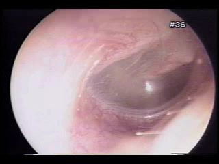 L15 slide 9 | Eustachian tube dysfunctionEustachian tubeL15 6–10 | No — fullnessConductive, mild to moderate | Retracted drum, reduced mobility | Fullness after a cold · crackling or popping on swallowing · retracted drum | Oedema of the tube lining after an upper respiratory infection or allergy stops the tube equalising pressure. Fullness, mild to moderate hearing impairment, and crackling or popping with yawning or swallowing, which indicates the blockage is only partial. Usually transient — days to weeks. | Clinical. Otoscopy: retraction of the tympanic membrane and decreased mobility on insufflation. Tympanometry, taught in the next lecture, shows a negative pressure peak. | Systemic or intranasal decongestants and intranasal corticosteroids. Forced exhalation against resistance. Caution with active nasal discharge — that manoeuvre can force infected fluid into the middle ear and trigger acute otitis media.Routine | Avoid air travel and other pressure changes until symptoms resolve. It is the commonest single reason an ear will not clear on a plane. |
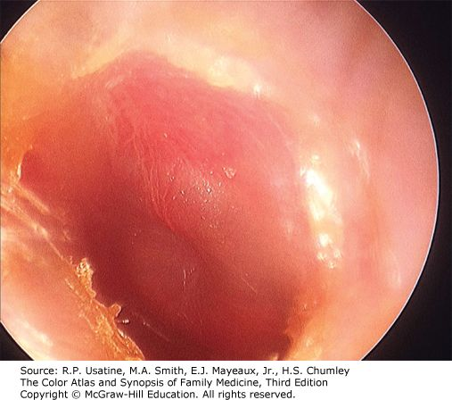 L15 slide 16 | Acute otitis mediaOtitis mediaL15 12–19 | YES — otalgia with feverConductive | Bulging, erythematous drum | Bulging, erythematous drum · otalgia and fever after a cold · child around 2 years | Rapid-onset middle ear inflammation, most often following an upper respiratory illness. Commonest in children, peak incidence around age 2; adults are only 3–15% of diagnoses. Otalgia, fever, hearing loss. Suppurative form discharges into the canal through a perforation. Recurrent means 3 or more episodes in 6 months, or more than 4 in 12 months, with complete resolution between. | Diagnosed clinically. Otoscopy: erythematous and/or bulging drum, purulent effusion often visible, decreased mobility on pneumatic otoscopy, sometimes palpable cervical nodes. Tympanometry optional. Far and away the commonest cause is VIRAL — the slide lists only bacteria. The three bacterial organisms are S. pneumoniae, H. influenzae and M. catarrhalis. That sequence used to run in order of prevalence; M. catarrhalis has now overtaken H. influenzae because of vaccination, so ask the immunisation status — an unimmunised child puts H. influenzae back on the list. | Most episodes resolve spontaneously. Antibiotics for bacterial involvement — amoxicillin. Analgesics and antipyretics for the pain and fever. Tympanostomy tubes for refractory or recurrent episodes, or when complications are present (ENT).Routine | Explain that most cases settle on their own, so a wait-and-see period is not neglect — most of these are viral. Return if pain worsens or discharge appears. |
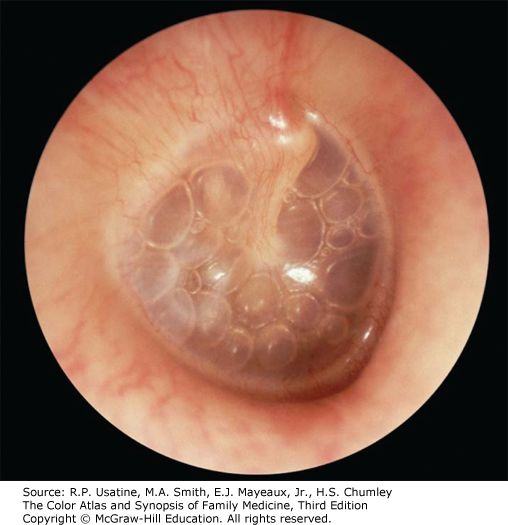 L15 slide 16 | Otitis media with effusionOtitis mediaL15 13–19 | NO — often asymptomaticConductive, temporary | Dull drum, air–fluid level | Dull drum with an air–fluid level · often asymptomatic · found incidentally | Middle ear inflammation with an effusion but without acute infection. Follows eustachian tube dysfunction trapping fluid, and often persists after a bacterial acute otitis media has resolved. Often asymptomatic and picked up incidentally on otoscopy; otherwise hearing loss and fullness. | Clinical. Otoscopy: dull tympanic membrane, air/fluid level often visible, decreased mobility on pneumatic otoscopy. Tympanometry optional — a type B curve fits the stiff, fluid-filled middle ear. | Most resolve spontaneously. The decision to intervene turns on how long the fluid has been there, the degree of hearing loss, and the effect on speech and language development. Tympanostomy tubes (ENT); adenoidectomy if hypertrophy is obstructing the tubes (ENT).Routine | In a child the risk is not the ear but the speech and language delay from months of muffled hearing — which is why duration matters more than the appearance. |
| no image on the slide | Chronic otitis mediaOtitis mediaL15 20 | Varies with activityConductive | Non-healing perforation | Non-healing perforation · recurrent infection · persistent drainage | Recurrent infection with a non-healing perforation of the tympanic membrane. Duration required for diagnosis is controversial — weeks to months. Three subtypes: benign (dry perforation, no active infection); with effusion, also called chronic serous otitis media (continuous serous drainage through the perforation); and chronic suppurative (persistent purulent drainage). | Clinical, on the persistent perforation and drainage. Audiometry for the associated conductive loss. | Refer to ENT.Routine | The perforation is the disease, not just its aftermath — water precautions and follow-up matter because it will not close on its own. |
| no image on the slide | MastoiditisOtitis mediaL15 19 | YESConductive | Complication of acute otitis media | Complication of acute otitis media · infection spreading to the mastoid air cells | Spread of acute otitis media infection into the mastoid air cells. Listed with tympanic membrane perforation, labyrinthitis and the rare meningitis or encephalitis as the complications of acute otitis media. | Suspected clinically in a child with acute otitis media who is not improving. Imaging defines the extent. | Treat as a complicated acute otitis media — ENT involvement.Urgent | It is the reason acute otitis media that is not settling gets re-examined rather than simply re-prescribed. |
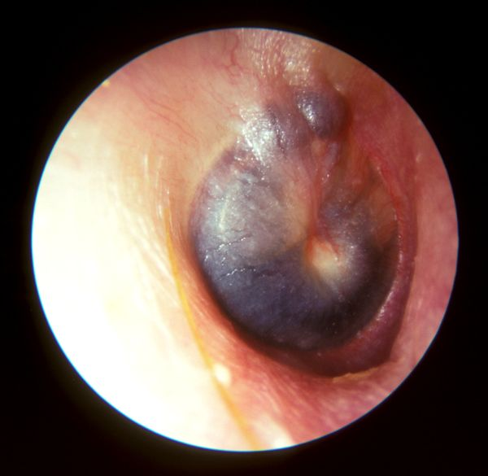 L16 slide 59 | BarotraumaPressure and waxL15 22–25 | YES — otalgiaConductive; sensorineural if the window ruptures | Haemotympanum, reduced mobility | Cannot equalise · flying or SCUBA · haemotympanum behind the drum | Inability to equalise middle ear pressure, seen with air travel, rapid altitude change and SCUBA diving. May rupture the tympanic membrane or bleed into the middle ear. Otalgia and conductive hearing loss. | Otoscopy: decreased mobility on insufflation, visible haemotympanum if there is haemorrhage, visible perforation if present. Severe cases can rupture the round or oval window, adding tinnitus, sensorineural hearing loss, vertigo, nausea and vomiting — that combination means the inner ear is involved. | Equalise by swallowing, yawning, exhaling through the nose against resistance. Oral or intranasal decongestants may help. Myringotomy gives instant relief and is reserved for severe otalgia and hearing loss with an intact membrane (ENT). Recurrent episodes in frequent flyers may justify tympanostomy tubes (ENT).Routine | Avoid pressure changes while a respiratory illness or allergy flare is active. If flying is unavoidable, take a decongestant beforehand and equalise on descent. |
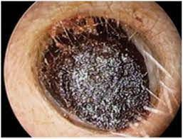 L15 slide 26 | Cerumen impactionPressure and waxL15 27–29 | No — pruritus, fullnessConductive | Wax obstructing the canal | Self-induced by cleaning · wax filling the canal · conductive loss that clears on removal | Cerumen is a protective, thick, oily secretion of the outer third of the canal, and the canal is normally self-cleansing. Impaction is most commonly self-induced by cleaning attempts that push wax deeper. May be asymptomatic, or cause pruritus, fullness and conductive hearing loss. | Otoscopy: visible cerumen fully or partially obstructing the canal, wet and sticky, dry and flaky, or dark. | Over-the-counter otic preparations to soften it. Irrigation or suction in clinic — irrigation uses body-temperature water and ONLY if the drum is intact. Curette removal suits soft wax and a compliant patient. If tympanostomy tubes or a perforation are present, removal must be done by ENT.Routine | Do not insert anything into the canal. If cleaning is wanted, a washcloth over the index finger at the opening is the whole technique. |
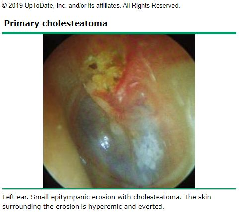 L15 slide 35 | CholesteatomaMiddle ear massL15 31–37 | No — otorrhoeaConductive, a late finding | Keratin debris in a retraction | Keratin debris in a retraction pocket · recurrent otorrhoea with no otitis externa | A collection of keratinised squamous epithelium in the middle ear or mastoid. No cholesterol in it and not a neoplasm, despite the name. Primary is commonest and forms from retraction of the tympanic membrane, usually the pars flaccida; secondary follows epithelial migration or surgery; congenital is least common and forms with no retraction or perforation. Risk factors are eustachian tube dysfunction and chronic middle ear inflammation. May be asymptomatic; otherwise tinnitus, recurrent otorrhoea in the absence of otitis externa, and hearing loss as a late finding. | Usually a clinical diagnosis. Otoscopy: retraction containing squamous epithelium and keratin debris, debris behind the drum, sometimes purulent otorrhoea, granulation tissue or visible ossicular erosion. Audiometry to assess hearing loss. CT for extent in severe cases, and useful in secondary acquired disease when the drum is opaque. | Refer to ENT. Remove canal debris, treat infection with antibiotics, then surgical removal, usually with tympanoplasty. Mastoidectomy if it extends into the mastoid with bony erosion.Urgent | It erodes bone, so it is removed rather than watched — the discharge is a symptom of that, not a simple infection. |
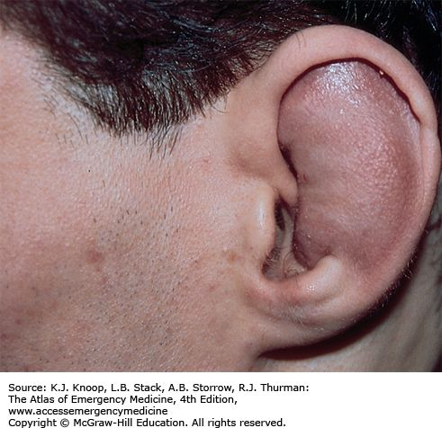 L15 slide 40 | Hematoma of the external earEar traumaL15 39–42 | YESNone | Auricle swollen, landmarks lost | Blunt trauma · cartilaginous landmarks lost · drain early or cauliflower ear | Blood pooling in the sub-perichondrial space, usually after blunt trauma. The collection keeps oxygen and nutrients from the cartilage, which is what risks necrosis. May develop hours after the injury, so patients are re-checked at 12–24 hours. Examination: oedema and ecchymosis of the auricle with loss of the cartilaginous landmarks. | Clinical. | Drain it — incision or large-needle aspiration — and do it early. After 7 days granulation tissue makes drainage much harder. Follow with irrigation and topical and/or systemic antibiotics. Ear splinting improves the cosmetic result and prevents re-accumulation: cotton bolsters, plaster moulds, silicone putty, thermoplastic splints.Urgent | Early diagnosis and drainage is what prevents cauliflower ear. Come back at 12–24 hours even if it looks minor, because the haematoma can appear late. |
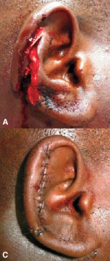 L15 slide 43 | Lacerations and avulsionEar traumaL15 43 | YESNone | Visible wound of the auricle | Blunt or sharp trauma to the auricle · prompt repair · pressure dressing after | Blunt or sharp trauma to the auricle. Prompt repair and infection prevention are critical. Simple lacerations close with sutures; complex ones and avulsions may need debridement first; tissue grafts if there is tissue loss. If avulsed tissue is recovered, reattachment is often successful. | Clinical. | Repair as above, then cover with a pressure dressing to prevent a haematoma forming under the repair.Urgent | Bring any avulsed tissue — reattachment often works. |
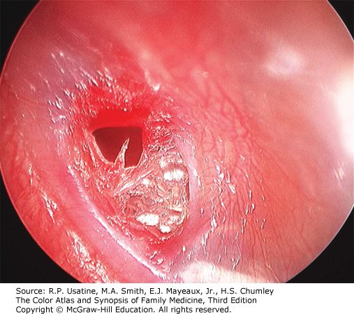 L15 slide 47 | Tympanic membrane perforationEar traumaL15 45–47 | Stops once it rupturesConductive | Visible defect, central or marginal | Pain stops after the rupture · conductive loss · visible defect | Follows impact injury, explosive acoustic trauma, barotrauma or severe acute otitis media. Symptoms vary with cause but it is generally not painful once the membrane has ruptured. Conductive hearing loss. Otoscopy distinguishes central (does not reach the margin) from marginal (involves the margin); drainage through the perforation if it followed acute otitis media. | Clinical, on otoscopy. | Most resolve spontaneously over several weeks — and as little as 48–72 hours when it followed acute otitis media. Surgical reconstruction for large perforations or ones present a long time (ENT).Routine | Keep the ear dry while it heals. Report worsening hearing or dizziness — trauma can disrupt the ossicles as well. |
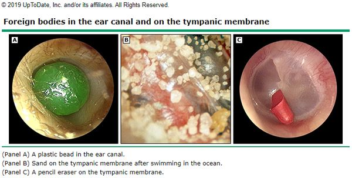 L15 slide 49 | Foreign body of the canalForeign bodyL15 49–50 | Varies with the objectConductive if obstructing | Object in the canal | Child · anything that fits · do not push it deeper | Commoner in children but possible at any age, and can be anything that fits — beads, popcorn, crayons, insects, pencil erasers, paper. Otalgia varies with the shape of the object; bloody discharge if the canal lining is damaged; fullness and foreign body sensation. | Otoscopy. | CAUTION — do not push the object deeper. Firm objects come out with a loop or hook, soft ones with alligator forceps. Irrigation only if the drum is known to be intact, and with care: organic objects swell when wet and lodge harder. Insects are immobilised first by filling the canal with lidocaine — again only if the drum is intact. Refer to ENT for removal under microscopy where warranted.Urgent | Nothing goes into the ear at home to fetch it out; attempts are what turn a simple removal into a referral. |
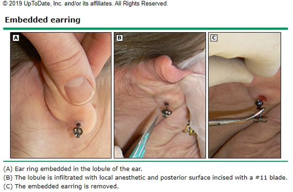 L15 slide 52 | Foreign body of the auricleForeign bodyL15 51–52 | YESNone | Embedded piercing | Embedded earring · girls and young adolescents · infection is the concern | Piercings becoming embedded in the earlobe or elsewhere on the auricle. Most common in girls and young adolescents with pierced ears. Pain, erythema and oedema; may have purulent drainage from the piercing site. Examination: pain on palpation, and the foreign body may be palpable. | Clinical. | Removal under local anaesthetic; younger or non-compliant patients may need sedation.Urgent | Infection is the biggest concern, not the object itself. |
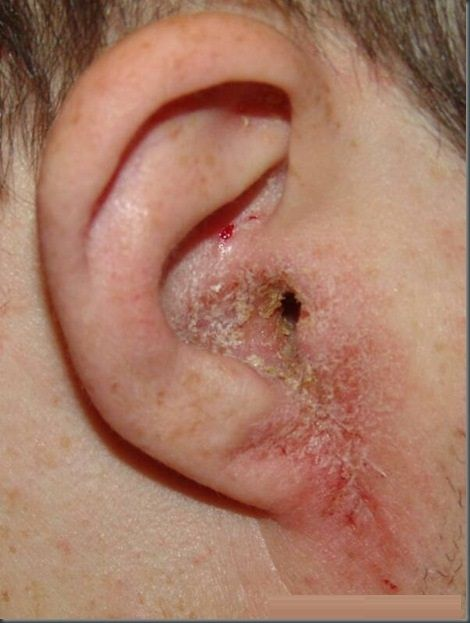 L15 slide 58 | Otitis externaExternal canal infectionL15 54–59 | YES — worse on moving the tragusConductive if the canal closes | Canal erythematous and oedematous | Pain on moving the tragus · swimmer · discharge from the canal | Inflammation and infection of the external canal, affecting 10% of people in their lifetime, all ages but commonest in children and early adolescence and in summer. Organisms: P. aeruginosa 38%, S. epidermidis 9%, S. aureus 8%; other bacteria and fungi possible. Risk factors: moisture and swimming, epithelial damage from aggressive cleaning, foreign bodies such as cotton swab fibres, occlusion by hearing aids or headphones, dermatitis of the auricle, radiation. Symptoms: otalgia exacerbated by touching or moving the auricle or tragus, otorrhoea, pruritus, fullness, reduced hearing. | Clinical diagnosis. Cultures reserved for severe, chronic or recurrent infection, immunosuppression, post-operative infection and treatment failure. Examination: tenderness to palpation, visible discharge, erythema and oedema of the canal, periauricular and anterior cervical lymphadenopathy, thickened canal skin in chronic disease. Differential: otomycosis, suppurative otitis media, contact dermatitis, psoriasis and the rare carcinoma of the ear canal. | Remove debris, then otic drops: antiseptic (boric acid, ichthammol, phenol, aluminium acetate, gentian violet, thymol, cresylate, alcohol), antibiotic (ofloxacin, ciprofloxacin, colistin, polymyxin B, neomycin, chloramphenicol, gentamicin, tobramycin) or acidifying (acetic acid). Combination drops with a steroid reduce pain and inflammation. An ear wick if the canal is stenosed.Routine | Keep the ear dry, stop cleaning it, and use the drops for the full course — the pain settles well before the infection does. |
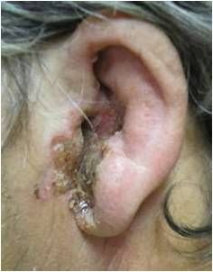 L15 slide 61 | Malignant otitis externaExternal canal infectionL15 61 | SEVERE — out of proportionConductive | Canal necrosis, facial nerve weakness | Elderly diabetic · pain out of proportion to the exam · facial nerve weakness | Also called necrotizing external otitis. A severe and potentially fatal infection of the bone and marrow spaces of the skull base and the soft tissue and cartilage of the temporal region. Elderly diabetics and immunocompromised patients are most at risk. Over 95% is spread of P. aeruginosa from an otitis externa. Symptoms: severe otalgia out of proportion to the physical findings, copious otorrhoea, sometimes visible necrosis of the canal and evidence of facial nerve weakness. | MRI or CT shows infection in the bony structures — that is what separates it from ordinary otitis externa. | Antipseudomonal antibiotics — for example ciprofloxacin.Emergent | The complaint that matters is pain far worse than the ear looks, in a diabetic or immunocompromised patient. That combination is not treated as a routine swimmer's ear. |
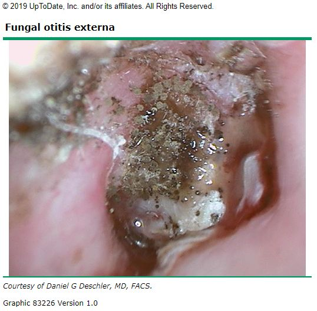 L15 slide 63 | OtomycosisExternal canal infectionL15 62–63 | Less than bacterial — itch dominatesConductive if obstructing | “Wet newspaper” or white curd | Itch more than pain · “wet newspaper” spores or white curd | Fungal infection of the external canal, 9% of ear canal infections and varying with climate. Commonest organisms Aspergillus niger and Candida. Pruritus, discomfort that is less painful than bacterial otitis externa, otorrhoea, foreign body sensation. | Otoscopy is the diagnosis. Aspergillus: visible fungal spores and filaments, described as “wet newspaper”. Candida: white, fluffy, curd-like material. Mild to moderate oedema. | Debris removal and topical antifungals.Routine | It is treated by cleaning the canal as much as by the drops; the itch outlasting the pain is the clue that it is fungal. |
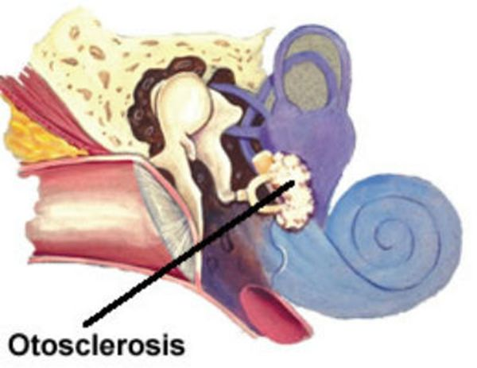 L15 slide 65 | OtosclerosisConductive fixationL15 65–67 | NOConductive, gradual | NORMAL drum | Hearing is better in background noise · gradual conductive loss · normal drum | Bony overgrowth affecting the stapes, which eventually fixes and causes hearing loss. Gradual conductive loss, bilateral and asymmetric in 70%, unilateral in 30%. The patient reports that hearing is better with background noise. Tinnitus. | Visual examination is normal — its job is to exclude the other causes of conductive loss such as foreign body and cerumen impaction. Weber lateralises to the affected ear (or the more affected ear if bilateral) and bone conduction is greater than or equal to air conduction on Rinne. Audiometry for the extent; CT is the initial imaging of choice. Differential: perforation, severe tympanosclerosis, otitis media with effusion, cholesteatoma, ossicular discontinuity, middle ear tumour. | Observation if unilateral or the patient is untroubled. Hearing aids. Surgery is elective, generally one ear at a time, replacing the stapes with a prosthesis or placing a cochlear implant (ENT). Non-surgical options under investigation — sodium fluoride, bisphosphonates — with recommendations varying widely (ENT).Routine | A conductive loss with a normal-looking drum is the pattern; improved hearing in noise is the sentence patients volunteer. |
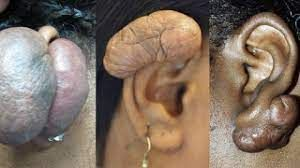 L15 slide 69 | Keloid of the earNeoplasmL15 69–70 | NoNone | Scar on the auricle | Hypertrophic scar after trauma — classically after piercing | Benign neoplasm of the ear: keloid and hypertrophic scars resulting from trauma. | Clinical. | Avoid further trauma. Intralesional steroid injection, corticosteroid tape, excision. Radiation therapy in adults, NEVER in children. Follow closely for recurrence.Routine | Recurrence is the rule rather than the exception, which is why follow-up is part of the treatment. |
| no image on the slide | Carcinoma of the ear canalNeoplasmL15 71 | YESConductive, late | Friable growth, bloody otorrhoea | Otitis externa that will not respond to treatment · bloody otorrhoea · friable canal | Very rare and aggressive. Presents with an abnormal growth in the ear canal, bloody otorrhoea, a friable ear canal and failure to respond to treatment for external otitis. Late findings are hearing loss and facial paralysis. Often misdiagnosed as otitis externa. | Definitive diagnosis is biopsy. | Biopsy first, then oncological management (ENT).Emergent | The teaching point is the misdiagnosis: an otitis externa that does not respond, especially with blood, gets looked at again rather than re-treated. |
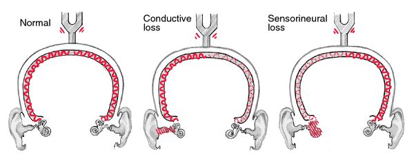 L16 slide 39 | Conductive hearing lossHearing loss patternL16 10–11, 42 | Depends on the causeConductive | Weber TO the bad ear; BC ≥ AC | Weber lateralises TO the bad ear · BC ≥ AC · hearing better in noise | An external or middle ear disorder impairing sound conduction to the inner ear. Four mechanisms: obstruction (cerumen), mass loading (effusion), stiffness (otosclerosis) and discontinuity (ossicular disruption). Onset is typically childhood to age 40. The abnormality is usually visible on otoscopy — except in otosclerosis. Hearing seems to improve in a noisy environment and the voice stays soft, because the inner ear and cochlear nerve are intact. Causes: cerumen impaction*, eustachian tube dysfunction*, otitis media, perforation, otosclerosis, foreign body, cholesteatoma, exostosis, glomus tumour, ossicular discontinuity (*commonest in adults). | Weber lateralises to the impaired ear. Rinne: BC = AC or BC > AC. Audiometry for the degree; tympanometry for the middle ear. | Treat the cause. Often correctable — which is the headline difference from sensorineural loss.Routine | The reassuring half of the pair: most conductive loss has a fixable mechanical cause. |
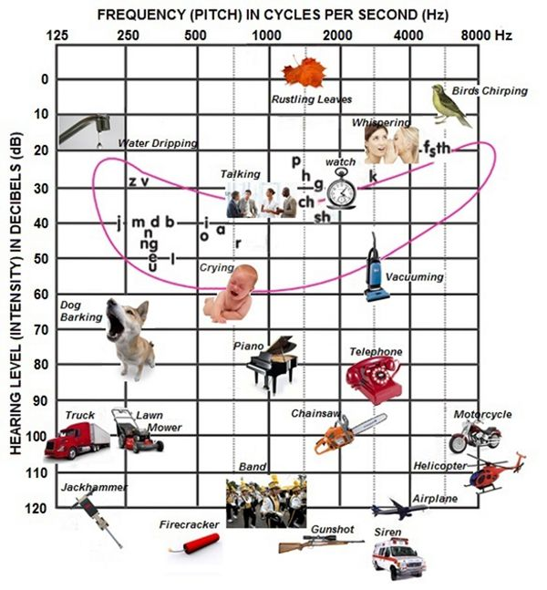 L16 slide 5 | Sensorineural hearing lossHearing loss patternL16 12–14, 42 | NoSensorineural | Weber to the GOOD ear; AC > BC | Weber lateralises AWAY to the good ear · AC > BC · worse in noise | Sensory (deterioration of the cochlea and loss of hair cells) and neural (lesions of the eighth nerve, auditory nuclei, ascending tracts, auditory cortex) are difficult to separate clinically and are grouped together. Onset in middle or later years; the ear canal and drum look normal. Higher registers are lost so sound is distorted, hearing worsens in a noisy environment, and the voice may be loud because hearing is difficult. | Weber lateralises to the GOOD ear. Rinne: AC > BC — the same as normal, which is why Weber carries the diagnosis. Audiometry classifies severity: normal 0–20 dB, mild 20–40, moderate 40–60, severe 60–80, profound >80 dB. It is all by 20s — 20, 40, 60, 80, which is how it was given in the lecture, and it is one of the few charts flagged as one to know outright. | Usually not correctable, but may be stabilised and some types prevented. Acute-onset sensory loss may respond to corticosteroids in the first weeks.Urgent | The window for steroids in sudden loss is short, which is why new one-sided hearing loss is not a wait-and-see problem. |
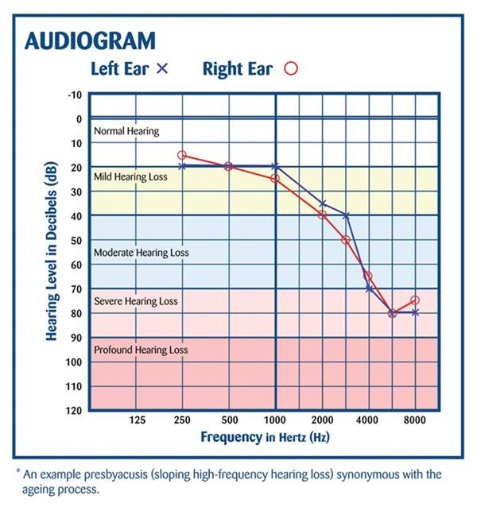 L16 slide 19 | PresbycusisHearing loss patternL16 15, 60–61 | NoSensorineural, bilateral | High-frequency loss, normal drum | Hears people speak but cannot make out words · bilateral · high frequency first | The commonest sensorineural hearing loss. Progressive age-related loss from hair cell loss in the organ of Corti and cochlear nerve degeneration. Bilateral, symmetrical, gradual. High frequencies go first, progressing to mid and low. Patients hear speech but cannot make out the words, miss the doorbell and the phone, may have tinnitus, and lip-read more than they realise. It is common enough that primary care screens everyone aged 65 and over for it as a matter of routine. The prevalence percentages on the slide are explicitly not to be memorised — “you don’t have to memorize these statistics”. | Audiometry showing bilateral symmetrical high-frequency loss. | Amplification and communication strategy. Not correctable.Routine | Face the patient, do not shout — volume is not the problem, discrimination is. |
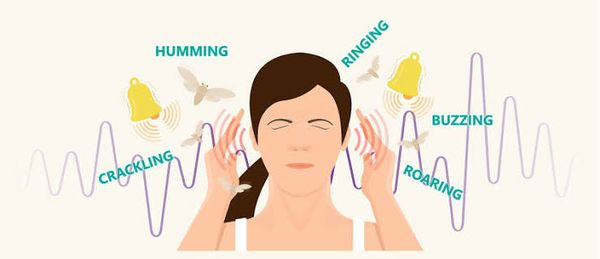 L16 slide 43 | TinnitusTinnitusL16 44–46 | NoAny type — often the first symptom | Unilateral or pulsatile is the red flag | Ringing with no external source · RED FLAG: unilateral or pulsatile | Can accompany any type of hearing loss and is often the first symptom of it. Described as ringing, buzzing, humming, hissing, a motor running, insects. Usually subjective; occasionally objective, meaning the examiner can hear it too. Everyone hears normal head noise in silence; low tolerance for it is associated with depression, neurosis, stress and fatigue. | Clinical. RED FLAG: unilateral or pulsatile tinnitus — that pattern is investigated rather than reassured. | No drug has been more effective than placebo. Biofeedback and masking noises may work.Routine | Avoid loud noise, get the lead level checked, avoid stimulants, exercise daily, get adequate rest, and learn to treat the noise as an annoyance rather than a threat. |
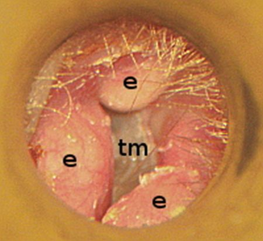 L16 slide 49 | ExostosisCanal and middle ear massL16 48 | NoConductive | Bilateral bony canal growths | Surfer or diver · bilaterally symmetrical bony canal growths | Bony growth in the external canal, bilaterally symmetrical, related to repetitive cold water exposure — divers and surfers. Can block the canal or collect debris. | Otoscopy. Causes conductive hearing loss. | Address obstruction and trapped debris; surgical removal if the canal is occluded.Routine | Earplugs in cold water are the prevention; the growths themselves are slow and painless. |
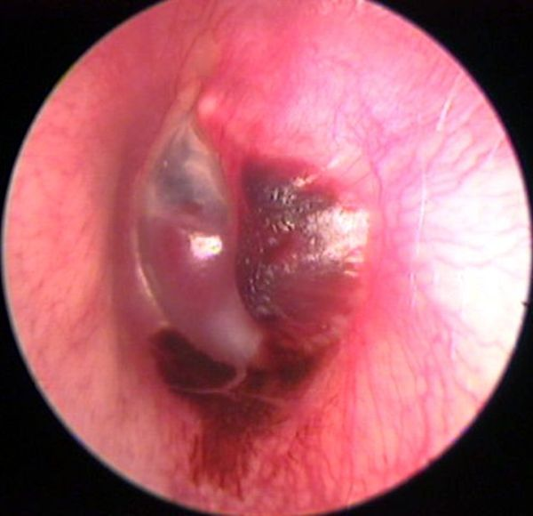 L16 slide 51 | Glomus tumourCanal and middle ear massL16 50 | NoConductive | Vascular middle ear mass; pulsatile tinnitus | Pulsatile tinnitus · vascular middle ear mass · cranial nerve IX, X, XI palsy | Benign but highly vascular tumour derived from the normal glomus formations of the middle ear and jugular bulb. Produces a middle ear mass effect, can present with spontaneous haemorrhage and paralysis of cranial nerves IX, X and XI, and may erode the skull base. | Causes conductive hearing loss and pulsatile tinnitus — the combination that separates it. Imaging for extent. | ENT and skull base management.Urgent | Pulsatile tinnitus with a mass behind the drum is not reassured away. |
| no image on the slide | OtotoxicityAcquired sensorineuralL16 52–53 | NoSensorineural, BILATERAL | Normal drum; drug history | Bilateral sensorineural loss on a known drug · aminoglycosides | Aminoglycosides are the most ototoxic and the most common — monitor peak levels. Also furosemide, aspirin and platinum-based chemotherapy. Many other agents have potential ototoxicity, and drugs that are ototoxic are frequently also nephrotoxic and vice versa, including the non-steroidal anti-inflammatories. Produces bilateral sensorineural hearing loss. | History of exposure plus audiometry. Monitor aminoglycoside peak levels. | Stop or change the agent where possible; the loss is often not reversible.Urgent | If a drug is ototoxic, ask about the kidneys too — the two toxicities travel together. |
| no image on the slide | Noise-induced hearing lossAcquired sensorineuralL16 54–55 | No — fullness, “crickets”Sensorineural | Normal drum; exposure history | Temporary threshold shift recovering in 24–48 h · “crickets” and fullness | One of the most common occupationally induced disabilities; exposure is regulated by OSHA. Most acute exposures produce temporary sensorineural loss recovering in 24–48 hours — a temporary threshold shift, with the ear feeling full and “crickets”. If the level is high enough or repeated often enough the loss becomes permanent — a permanent threshold shift. Rarely, extremely intense impulse exposure perforates the drum, giving a conductive loss instead. | Audiometry. Exposure history against the decibel table: damage is possible after 2 hours at 80–85 dB, 50 minutes at 95, 15 minutes at 100, under 5 minutes at 105–110, and pain and injury at 120. | Remove the exposure and protect hearing. The permanent component is not recoverable.Routine | The temporary shift is the warning shot — recovering by the next day does not mean no damage is accumulating. |
| no image on the slide | Acoustic traumaAcquired sensorineuralL16 56–57 | YES at the timeSensorineural; conductive if perforated | May show perforation | Single loud noise · immediate loss · may perforate the drum | A single loud noise creating immediate hearing loss, and it may perforate the tympanic membrane. Blows to the head can cause labyrinthine injury with resulting sensorineural loss. Penetrating injuries are rare but usually involve subluxation of the stapes, causing profound sensorineural loss. | Audiometry. Depending on the type, the loss can mimic noise-induced loss or be a complete loss of both auditory and vestibular function. | Supportive; ENT for perforation or suspected ossicular injury.Urgent | One event can do what years of exposure does — and a penetrating injury threatens balance as well as hearing. |
| no image on the slide | Perilymphatic fistulaAcquired sensorineuralL16 63–64 | NoSensorineural, sudden | Audible “pop” with vertigo | Audible “pop” then sudden loss and vertigo after straining or barotrauma | A pathological communication between the perilymphatic space of the inner ear and the middle ear, at the round or oval window. Congenital or acquired. Acquired causes: barotrauma, temporal bone trauma, or a complication of stapedectomy. Presents as sudden sensorineural loss and vertigo after head injury, barotrauma, or heavy lifting and straining, sometimes with an audible “pop”. A rare cause of vertigo and sensorineural loss. | Clinical, on the history. Fistula test is among the vestibular studies. | Treat symptomatically and refer to ENT.Urgent | The trigger is the diagnosis: sudden hearing loss and vertigo that began with a strain, a dive or a blow. |
| no image on the slide | Autoimmune sensorineural lossAcquired sensorineuralL16 65–66 | NoSensorineural, bilateral | Stepwise deterioration | Bilateral, progressive, in periods of deterioration and stabilisation | Sensorineural loss that is most often bilateral and progressive, with periods of deterioration and stabilisation, and may be accompanied by vestibular dysfunction. Uncommon: Cogan's syndrome, polyarteritis nodosa, relapsing polychondritis, granulomatosis with polyangiitis. Even less common: scleroderma, temporal arteritis, systemic lupus erythematosus, sarcoidosis. | Routine screening for autoimmune disorders is not warranted — test when the picture suggests it. | Treat the underlying disease.Urgent | The stepwise pattern — worse, then stable, then worse — is what distinguishes it from a steady decline. |
| no image on the slide | Syphilitic sensorineural lossAcquired sensorineuralL16 35, 68 | NoSensorineural, fluctuating | Mimics Ménière's | Indistinguishable from Ménière's · the treatable cause you must not miss | Congenital or acquired. Hearing loss is not associated with primary acquired syphilis, but reaches as high as 80% in symptomatic neurosyphilis. Presentation is often indistinguishable from Ménière's: fluctuating sensorineural loss, tinnitus, aural fullness and episodic vertigo. | The one exception to not ordering labs. FTA-ABS and MHA-TP should be obtained. VDRL is not helpful. | Antibiotic with the addition of systemic corticosteroids.Urgent | It is tested for precisely because it is a potentially treatable cause of sensorineural loss hiding behind a Ménière's picture. |
| no image on the slide | AIDS-related sensorineural lossAcquired sensorineuralL16 67 | NoSensorineural | Unexplained loss with risk factors | Unexplained sensorineural loss with risk factors present | Sensorineural loss is among the numerous neurological manifestations of AIDS. It may come from an infectious complication — cryptococcal meningitis or syphilis — or be a primary neurological manifestation. | Consider in any patient with unexplained sensorineural loss and risk factors present. | Treat the underlying cause.Urgent | It is on the list so that unexplained loss prompts a risk-factor history rather than an audiogram alone. |
| no image on the slide | Hereditary sensorineural lossAcquired sensorineuralL16 71 | NoSensorineural | Family history; syndromic features | Waardenburg, Alport, Usher · and the nonsyndromic majority | Nonsyndromic hereditary hearing loss, plus the named syndromes: Waardenburg's, Alport and Usher's. | Family history; genetic evaluation where indicated. | Amplification and the associated systemic disease.Routine | The syndromic names carry the other organ involved — kidney in Alport, vision in Usher. |
| no image on the slide | Sudden sensorineural hearing lossAcquired sensorineuralL16 13, 79 | NoSensorineural, UNILATERAL | Normal drum, sudden onset | Unilateral, sudden · a syndrome, not a disease · prompt ENT referral | Unilateral. Described explicitly as a syndrome, not a disease. Viral or vascular aetiology; rarely retrocochlear pathology — horses not zebras. The exact cause is rarely certain. | Audiometry to confirm and side it. Imaging only in selected patients. | Demands prompt referral to ENT. Acute sensory loss may respond to corticosteroids within the first weeks.Emergent | Speed is the whole management. This is the one hearing complaint that is seen the same day. |
| no image on the slide | Ménière's diseaseInner ear syndromeL16 69–70, 89, 97 | No — fullnessSensorineural, LOW frequency, fluctuating | Vertigo lasting hours + tinnitus | Vertigo hours long · LOW-frequency fluctuating loss · fullness and low-tone tinnitus | Fluctuating LOW-frequency sensorineural hearing loss that may fluctuate at first then progress. Low-tone, “blowing” tinnitus. Unilateral fullness in the ear. Episodes of vertigo, often the presenting complaint. Typical attack: episodic, spontaneous, severe spinning vertigo lasting several hours, frequently with nausea, vomiting and diaphoresis. | Clinical. Duration separates it: seconds for benign positional vertigo, minutes to hours for Ménière's, days to weeks for vestibular neuronitis and labyrinthitis. Rule out syphilis, which mimics it exactly. | Symptomatic control of the attacks and the underlying management.Urgent | The tetrad is vertigo, fluctuating hearing loss, tinnitus and fullness — and unlike the other peripheral causes, hearing is affected. |
| no image on the slide | Benign paroxysmal positional vertigoInner ear syndromeL16 89–93, 97 | NoNOT affected | Positive Dix-Hallpike; seconds only | Seconds of vertigo on rolling over · hearing normal, no tinnitus | Severe vertigo with change in head position — rolling over, getting into bed, standing up, bending, looking up to reach an object, tilting the head back to shave, a haircut, turning rapidly. A specific side is typically described. Symptoms come on after a short latency of 10–15 seconds and last only 10–60 seconds; more than a minute should prompt an alternative diagnosis. Bouts cluster in time with remissions of months or more. Between attacks there may be constant lightheadedness worse with head movement, and imbalance for hours after an episode. | Diagnosed by the classic eye movements on the Dix-Hallpike manoeuvre plus a suggestive history. Most cases have no identifiable aetiology; canalithiasis of the posterior semicircular canal is thought to be the commonest cause. | The Epley manoeuvre, which repositions the otoliths in the semicircular canal.Routine | Hearing is not affected and there is no tinnitus — those two absences are what place it against Ménière's. |
| no image on the slide | LabyrinthitisInner ear syndromeL16 95, 97 | NoSensorineural — hearing IS affected | Sudden vertigo, days to weeks | Sudden vertigo WITH hearing loss lasting days to weeks | Inflammation of the membranous labyrinth of the inner ear. Relatively sudden onset of sensorineural hearing loss AND acute vertigo. Exact aetiology rarely certain; evidence supports a viral cause, and it may be associated with bacterial infection or systemic autoimmune disease. Also listed as a complication of acute otitis media. | Clinical. Duration several days to weeks. | Symptomatic. Antibiotics if bacterial symptoms such as fever are present. Oral corticosteroids. Oral diazepam or meclizine during the acute vertigo.Urgent | The difference from vestibular neuronitis is one word: labyrinthitis affects hearing. |
| no image on the slide | Vestibular neuronitisInner ear syndromeL16 96–97 | NoNOT affected | Sudden vertigo, no hearing change | Dramatic sudden vertigo with NO hearing change · benign and self-limiting | Inflammation of the vestibular portion of cranial nerve VIII, likely viral though the cause is unknown. Considered benign and self-limiting. Dramatic, sudden vertigo with nausea and gait imbalance. Dizziness lasts days with gradual improvement; balance symptoms may persist for months. Not associated with any change in hearing or focal neurological complaints. | Clinical diagnosis. | Symptomatic. Oral diazepam or meclizine during the acute phase, antiemetics, and oral corticosteroids are questioned in the deck rather than asserted.Urgent | Normal hearing and no focal neurology is what makes it benign — either of those being abnormal moves the diagnosis. |
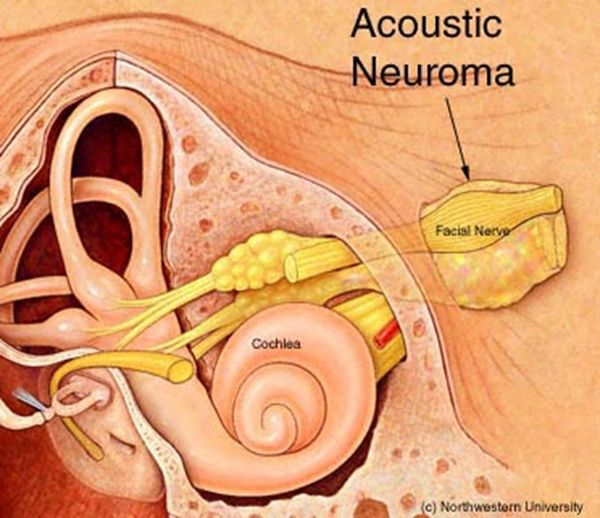 L16 slide 73 | Acoustic neuromaRetrocochlear and centralL16 72–75, 97 | NoSensorineural, unilateral | Speech discrimination worse than expected | Unilateral loss with speech discrimination worse than the tone loss predicts | Benign tumour of cranial nerve VIII, rare, and most often unilateral. Symptoms: unilateral hearing loss, which may be sudden; poor speech discrimination compared with what the tone loss would predict; often disequilibrium. Progression may not be so “benign”. May involve cranial nerves V and VII. | MRI with gadolinium is the gold standard for evaluating potential retrocochlear loss. Electronystagmography is the gold standard vestibular test for disorders affecting one ear at a time. Radiographic imaging is warranted in selected patients with sensorineural loss. | Observation with annual MRI, surgery, or radiation.Urgent | The discriminating symptom is not the volume of the loss but the disproportionately poor word understanding on the affected side. |
| no image on the slide | Vertebrobasilar insufficiency or occlusionRetrocochlear and centralL16 77, 85–87 | NoMay be affected | Brainstem signs with the vertigo | Vertigo in an elderly patient with brainstem signs | A common cause of vertigo in elderly patients. Occlusion may be thrombotic or embolic. Symptoms: acute vertigo, nausea and vomiting, facial paralysis, tinnitus, ipsilateral gaze paralysis, ipsilateral loss of pain and temperature on the face, contralateral partial loss of pain and temperature on the trunk and limbs, and ipsilateral Horner's syndrome. Vascular disease is the commonest non-vestibular cause of dizziness and balance loss in the elderly. | Magnetic resonance angiography, which also shows small vessel disease as scattered small white lesions. Carotid dopplers. | Vascular and stroke management.Emergent | Vertigo with any crossed sensory finding, facial weakness or gaze palsy is a brainstem problem until proven otherwise. |
| no image on the slide | Isolated cerebellar infarctionRetrocochlear and centralL16 78 | Headache possibleNot affected | Ataxia, facial numbness | Vertigo with ataxia, headache or facial numbness | Symptoms include vertigo, facial pain or numbness, headache, or ataxia. The deck's instruction is explicit: “Don't miss something bigger than the hearing loss” — look for signs of a more sinister acute problem. | Neuroimaging. | Refer for evaluation.Emergent | It is in a hearing lecture as a warning, not as an ear disease. |
| no image on the slide | Functional hearing lossNon-organicL16 80 | NoClaimed, not organic | Normal voice despite claimed loss | Claims profound bilateral loss but the voice is normal | Suspected when the history contains inconsistencies, complaints and exaggerated listening effort. The patient's voice and speech quality provide important information: someone claiming significant bilateral loss while speaking at a normal level with normal articulation should be suspected of functional behaviour. | The mismatch between claimed loss and the voice is the finding. Audiometry with cross-checks. | Address the underlying reason rather than the audiogram.Routine | A genuinely deaf voice changes. That is the observation the diagnosis rests on. |
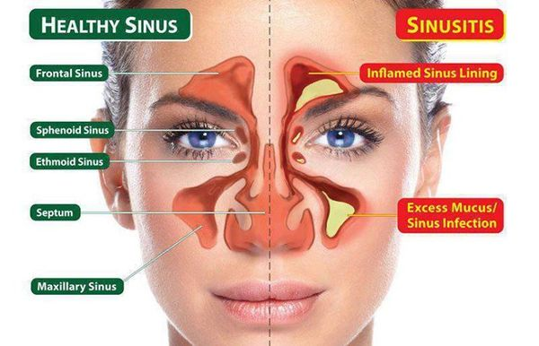 L17 slide 7 | Acute sinusitis (rhinosinusitis)SinusitisL17 9–27 | Pressure; frank pain suggests bacterialRhinorrhoea, postnasal drip | Pain worse bending forward | Under 4 weeks · 90–98% VIRAL · facial pain that is worse bending forward | Symptomatic inflammation of one or more paranasal sinuses lasting under four weeks, from impaired drainage and retained secretions, with obstruction and/or facial pain, pressure or fullness. “Rhinosinusitis” is the preferred term because rhinitis and sinusitis usually coexist. Affects 1 in 8 adults — over 30 million a year in the United States — and is the fifth leading reason antibiotics are prescribed. Nasal drainage and congestion, rhinorrhoea, postnasal drip, headache. Pain localises to the involved sinus and is worse bending over or lying flat. | No diagnostic test distinguishes viral from bacterial, and none is indicated routinely. Routine sinus radiography is discouraged: three or more clinical findings have similar accuracy to imaging, and imaging cannot separate the two causes anyway. Limited coronal CT for recurrent infection or failure to respond, or if signs suggest extrasinus involvement. Viral causes rhinovirus, parainfluenza, influenza; bacterial S. pneumoniae, nontypable H. influenzae and — in children — M. catarrhalis. Immunocompromised: fungal — Rhizopus, Mucor, occasionally Aspergillus. Nosocomial cases are polymicrobial with S. aureus and gram-negative bacilli. | Most improve WITHOUT antibiotics. Symptomatic: decongestants, non-steroidal anti-inflammatories, nasal or sinus lavage, intranasal steroids, neti pot, saline sprays. If bacterial: amoxicillin/clavulanate. Penicillin allergy: doxycycline, or an antipneumococcal fluoroquinolone such as moxifloxacin. If influenza, oseltamivir for five days in anyone over 13. Medical treatment fails → ENT referral for surgery.Routine | Tell the patient what they have, how they got it, how to use the medicine or device, and — if referring — to which specialty. Most cases are viral and settle without antibiotics. |
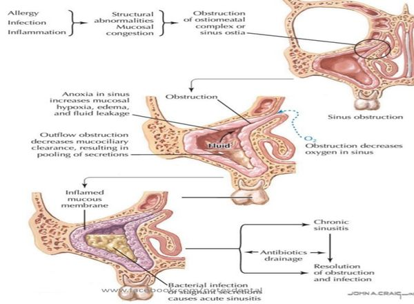 L17 slide 15 | Bacterial sinusitis — the features that suggest itSinusitisL17 16–19, 23 | YES — and REPRODUCIBLE on palpationPurulent, sometimes putrid | UNILATERAL maxillary tenderness | Double worsening · ≥10 days · UNILATERAL tooth or facial pain | Only 0.5–2% of viral episodes develop a bacterial superinfection, so these features are what raise the possibility: worsening after 5–6 days of initial improvement; persistent symptoms for 10 days or more; persistent purulent discharge; UNILATERAL upper tooth or facial pain; unilateral maxillary tenderness; fever; altered mental status. | PAIN is the big distinguishing factor — it occurs only in bacterial and fungal sinusitis, and it is reproducible on palpation, which a common cold is not. Fever above 100.4°F and severe pain point bacterial or fungal — check the patient is not on an antipyretic first. Discharge colour is largely unhelpful: yellow or green is the least useful; clear may be viral or allergic; yellow AND putrid suggests bacterial; BLACK suggests fungus; rust-coloured may be S. pneumoniae. | Symptomatic treatment plus antibiotics — amoxicillin/clavulanate first line.Routine | The colour of the discharge is the thing patients most expect to be diagnostic, and it is the thing that matters least. |
| no image on the slide | Sinusitis with urgent featuresSinusitisL17 17, 21 | YESAny | Diplopia, periorbital swelling, confusion | Diplopia · periorbital swelling or erythema · altered mental status | The lecture names these separately as symptoms requiring urgent attention in a patient with sinusitis: visual disturbance, especially diplopia; periorbital swelling or erythema; altered mental status. | Sinus CT if signs suggest extrasinus involvement. These are the findings that say the disease has left the sinus. | Urgent evaluation and imaging rather than another course of symptomatic treatment.Emergent | The orbit sits next door to the ethmoid sinus. Eye signs in a sinusitis patient are the ones that change the plan. |
| no image on the slide | Chronic bacterial sinusitisSinusitisL17 28–29 | Pressure, with flaresConstant congestion | >12 weeks | Over 12 weeks · constant congestion with flares · impaired mucociliary clearance | Sinusitis lasting more than twelve weeks. The mechanism is impaired mucociliary clearance causing REPEATED infections rather than one persistent infection. Constant nasal congestion and sinus pressure, with periods of increased severity. | Sinus CT defines extent, detects an underlying anatomic defect or obstruction, and assesses response. Endoscopy-derived tissue for histology and culture should guide treatment. Consider full blood count with differential and IgE. | Repeated antibiotic courses, often 3–4 weeks at a time — oral steroids plus two weeks of amoxicillin/clavulanate is the stated regimen. Adjuncts: intranasal glucocorticoids, sinus irrigation. Refer to ENT for surgical evaluation and to allergy for skin testing.Urgent | It is a drainage problem as much as an infection, which is why it keeps coming back and why surgery enters the conversation. |
| no image on the slide | Chronic fungal sinusitisSinusitisL17 30 | VariablePeanut-butter mucus in the allergic form | Fungus ball on imaging | Aspergillus · a fungus ball · allergic form has peanut-butter mucus | Noninvasive disease in immunocompetent hosts, typically Aspergillus and dematiaceous moulds. Recurrence is common. The allergic form is seen in patients with nasal polyps and asthma and presents as pansinusitis with thick, eosinophil-laden mucus the consistency of peanut butter. | Imaging and endoscopy. Unilateral disease with a mycetoma (fungus ball) is the characteristic finding. | Mild indolent disease is cured by endoscopic surgery WITHOUT antifungals. A fungus ball is treated surgically — and with antifungals only if bony erosion has occurred.Urgent | The surprise here is that most of it is treated surgically rather than with drugs. |
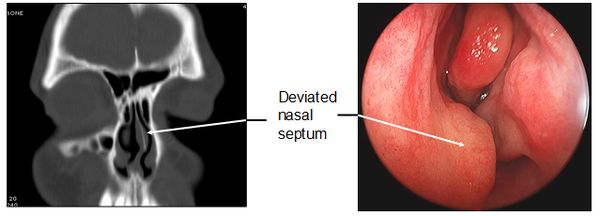 L17 slide 36 | Deviated septumSeptumL17 32–36 | No, unless severeCongestion; recurrent bleeds | One passage smaller | One passage smaller than the other · congenital or traumatic | The nasal septum is significantly displaced to one side, making one air passage smaller. Congenital or traumatic. Ranges from congestion — through blockage of the ostia — to anosmia. In severe forms: obstructive sleep apnoea, snoring, facial pain and recurrent nosebleeds. | Clinical, with a nasal speculum; CT where needed. | Surgery — septoplasty, by an otorhinolaryngologist.Routine | The recurrent nosebleeds and the snoring are what usually bring the patient in, not the deviation itself. |
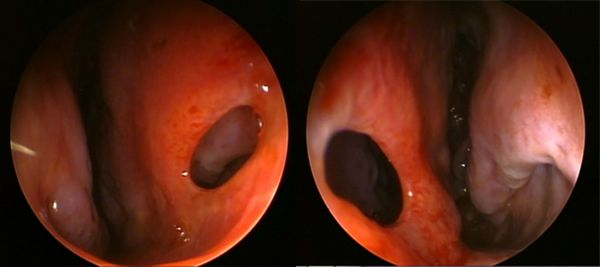 L17 slide 38 | Perforated septumSeptumL17 37–40 | NoCrusting, whistling | Visible perforation | Intranasal steroid or COCAINE use · chronic ischaemia | A perforation through the nasal septum. Congenital or traumatic, but many are from intranasal steroid use or cocaine use, both by chronic ischaemia. Rarely granulomatosis with polyangiitis (Wegener’s), a vascular autoimmune disease, may cause nasal deformity. Rarely, secondary syphilis — seldom seen now. | Physical examination, possibly with CT. | Treat the underlying cause and it may grow back; otherwise septoplasty.Routine | The drug history is the diagnosis here — ask about both prescribed nasal steroids and cocaine. |
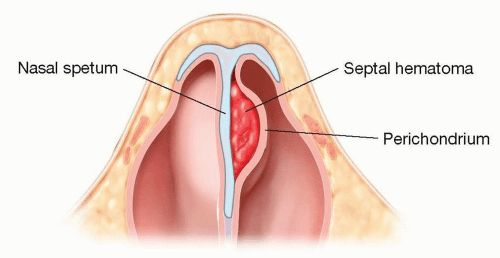 L17 slide 42 | Septal haematomaSeptumL17 41–43 | YESObstruction | Swelling between septum and perichondrium | Blood between septum and perichondrium · after trauma · drain it | A haematoma between the nasal septum and the perichondrium or mucosal epithelium. Usually secondary to trauma; other causes are bleeding disorders, cocaine, foreign body and medications. Associated with nasal fracture — look for it in every nasal injury. | Inspection with a nasal speculum. It is one of the four things that must be excluded before a nasal fracture can be managed without imaging. | Drainage via intranasal incision under general anaesthesia.Urgent | The same lesson as the auricular haematoma in Lecture 15: cartilage separated from its blood supply does not survive. |
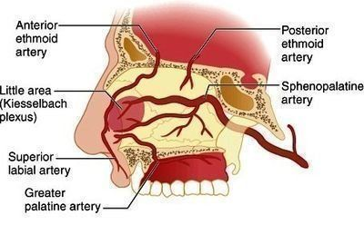 L17 slide 47 | Epistaxis — anteriorEpistaxisL17 45–51 | NoFrank blood, anteriorly | Kiesselbach’s plexus | Kiesselbach’s plexus · 90% of nosebleeds · commonest cause is the patient’s finger | A common emergency department complaint, most cases before age 10 or between 45 and 65, with a winter predominance. The commonest cause is trauma — from the patient’s finger. Chronic dry nose is a risk factor. Anterior bleeds are by far the commonest: 90% arise in the vascular watershed of the nasal septum — Kiesselbach’s plexus. | Airway, breathing, circulation first — bleeding can be severe. Normal appearance, vital signs and respiratory function is the reassuring picture. History: tumours, coagulation disorders personal and family, recent trauma or surgery, medications — aspirin, warfarin, clopidogrel, intranasal glucocorticoids, and cirrhosis, HIV or intranasal cocaine. A prothrombin time with INR is NOT a routine test — order it for the anticoagulated patient. Haematocrit and type and crossmatch in massive or prolonged haemorrhage, with two large-bore intravenous lines. | Initial tamponade, and patients can do it themselves: blow the nose to clear clots → spray with oxymetazoline → pinch the alae against the septum continuously for 10 minutes. Also: sit up and lean forward at the waist so blood is not swallowed, a cotton pledget in the nostril, spit out blood in the pharynx, cold compress on the bridge. Then nasal tampons, gauze packing, balloon catheters, thrombogenic foams and gels.Urgent | Teach these manoeuvres for use at home. And DO NOT BLOW THE NOSE afterwards. |
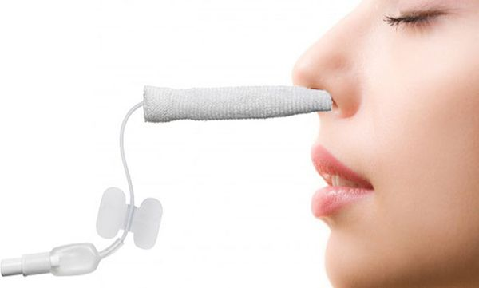 L17 slide 52 | Epistaxis — posteriorEpistaxisL17 45–46 | NoHeavy; blood in the pharynx | Sphenopalatine artery | Sphenopalatine artery · significant haemorrhage · ASPIRATION risk | Arises most commonly from the posterolateral branches of the sphenopalatine artery, but may arise from branches of the carotid. Results in significant haemorrhage. | You must determine whether the bleed is anterior, posterior, or both. | As for anterior bleeding, escalating to packing and ENT involvement.Emergent | Posterior bleeds carry a higher risk because of ASPIRATION and subsequent infection — that is why the distinction is made. |
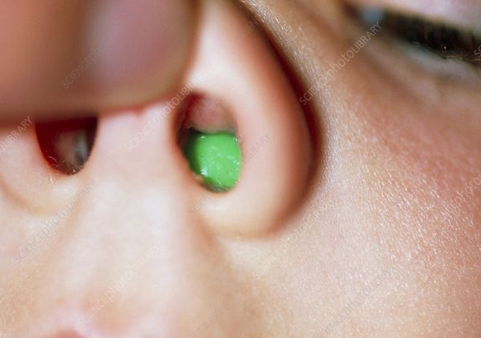 L17 slide 53 | Nasal foreign bodyForeign bodyL17 53–55 | VariableUNILATERAL, purulent, FOUL-SMELLING | Object visible under a turbinate | UNILATERAL foul-smelling purulent discharge in a young child | Commonest in young children. Most often on the floor of the nasal passage just under the inferior turbinate, or superiorly just in front of the middle turbinate. Unilateral purulent and foul-smelling nasal discharge in a young child strongly suggests it. | Visualisation establishes the diagnosis. Imaging is rarely needed. | Removal — instrument chosen by what the object is: forceps for graspable objects, a wire loop, right-angle hook or curette for round smooth ones, suction for smooth or free-floating beads, beans, magnets or batteries. Get help — refer to ENT.Urgent | A one-sided smelly discharge in a toddler is a foreign body until proven otherwise, not sinusitis. |
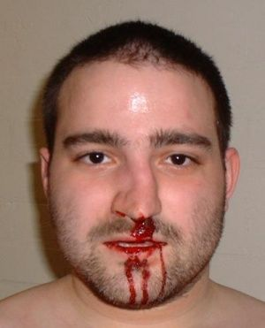 L17 slide 58 | Nasal fractureNasal traumaL17 56–58 | YESEpistaxis | Tenderness and crepitus over the bridge | Contusion and tenderness over the bridge = fracture · commonest facial fracture site | From trauma. Suspect other injuries — orbital and midface fractures. Associated with septal haematoma. The nasal bridge is the commonest site. Examination: palpate for tenderness, crepitus and abnormal movement, and inspect with a nasal speculum. | X-rays are NOT needed if all four hold: tenderness and swelling isolated to the bony bridge; the patient can breathe through each naris; the nose is straight, with no septal deviation; and there is no septal haematoma. If any fails, plain films. | Initial treatment is ice and head of bed elevated.Urgent | The four criteria are the useful thing to carry — they decide imaging at the bedside. |
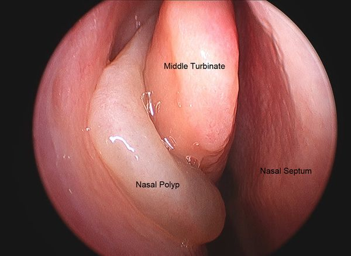 L17 slide 61 | Nasal polypsPolyps and rhinitisL17 59–65 | NoThick discharge | Grey glistening masses; ANOSMIA | Grey, glistening masses · anosmia · asthma and aspirin sensitivity | Abnormal, grey, glistening masses filled with inflammatory material in the nasal cavity or paranasal sinuses. Large or extensive polyps cause congestion or blockage, thick discharge and ANOSMIA. Frequently associated with chronic rhinosinusitis, asthma and aspirin sensitivity — aspirin-exacerbated respiratory disease. In children they occur with chronic sinusitis, allergic rhinitis, cystic fibrosis or allergic fungal sinusitis. From the slide that is an image of a list: associated conditions include bronchial asthma 20–50%, cystic fibrosis 5–44%, allergic fungal sinusitis 85%, aspirin intolerance 8–20%, alcohol intolerance 50%, Churg-Strauss 50%, primary ciliary dyskinesia, Young syndrome and NARES 20%. | Diagnosed clinically by their appearance on nasal speculum or rhinoscopy, and identifiable on CT. Chloride sweat test if cystic fibrosis is a concern; full blood count with differential, IgE and IgA; consider a nasal smear for eosinophils; CT for extent or surgical planning. | Medical: non-drowsy oral antihistamine (loratadine, fexofenadine, cetirizine, levocetirizine), leukotriene inhibitor at night (montelukast, zafirlukast), intranasal or oral steroids, intranasal ipratropium, immunotherapy, decongestants with caution. Surgery gives only temporary relief — they recur within months to years.Urgent | Evaluate EVERY child with benign multiple nasal polyposis for cystic fibrosis and asthma. The deck gives that its own slide. |
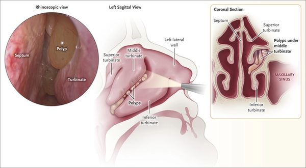 L17 slide 62 | Allergic rhinitisPolyps and rhinitisL17 13, 26, 66–68 | NoCLEAR, BILATERAL | Bluish, boggy mucosa | CLEAR discharge from BOTH nostrils · bluish, boggy mucosa | Rhinorrhoea secondary to allergy: the body treats the allergen as foreign and releases chemokines causing hypermucosal production. Extremely common and rising. | Clinical — mostly the history. Findings: clear discharge from each nostril, a bluish hue to the nasal mucosa, oedematous mucosa, and with or without nasal polyps. | 80% of patients end up on two or more allergy medicines. Non-drowsy oral antihistamine by day and a drowsy one at night if needed; leukotriene inhibitor at night; intranasal steroids with caution in chronic use; immunotherapy; intranasal ipratropium; decongestants with caution in chronic use and in high blood pressure.Routine | Allergy does not cause “-itis” itself — it creates the perfect environment for infection. Many patients who think they have sinusitis have allergic disease. |
| no image on the slide | Nasopharyngeal carcinomaNeoplasmL17 69–70 | HeadacheMay be bloody | Neck mass + cranial nerve signs | Neck mass + diplopia + facial numbness · Epstein-Barr virus | The predominant tumour arising in the nasopharynx. Rare in the United States and Western Europe; endemic in Southern China including Hong Kong, Southeast Asia, North Africa, the Middle East and the Arctic. Two- to threefold more common in males. Associated with Epstein-Barr virus, human papillomavirus and smoking, and with high-salt diets, Chinese herbs, rancid butter and sheep fat. | Presents with headache, diplopia, facial numbness and a mass in the neck. Referral to ENT and endoscopic guided biopsy of the primary tumour. | Oncological management following biopsy (ENT).Emergent | The combination that should prompt referral is a neck mass with cranial nerve symptoms, not nasal symptoms alone. |
| no image on the slide | Benign nasal neoplasmsNeoplasmL17 71 | NoNone | As the equivalent skin lesion | Same as skin — the dermatology lesions, on the nose | The lecture defers to the dermatology block: warts, freckles, haemangioma, port-wine stain and the rest behave on the nose as they do elsewhere. | As for the equivalent skin lesion. | As for the equivalent skin lesion — see the dermatology lectures.Routine | Worth knowing only as the counterpart to the malignant list; the detail lives in the dermatology material. |
| no image on the slide | Branchial cleft cystCongenital neck massL18 22 | Yes when infectedLateral — anterior border of sternocleidomastoid | Tender inflammatory mass appearing after an upper respiratory infection | LATERAL neck · anterior border of the sternocleidomastoid · swells after an upper respiratory infection | Failure of the pharyngobranchial ducts to obliterate in fetal development. Presents in late childhood or early adulthood, usually when the cyst becomes infected after an upper respiratory infection: a tender, inflammatory mass at the anterior border of the sternocleidomastoid, with overlying erythema and swelling if infected. | Clinical, with imaging to define the tract. Rule out human papillomavirus-associated squamous cell carcinoma before accepting the diagnosis in an adult — it can present as a cystic neck mass. | Control the infection first, then surgical excision of the cyst and its tract. Avoid incision and drainage unless there is frank abscess — and even then needle aspiration is preferred, because I&D makes the definitive excision harder.Routine | The cyst was always there; the infection is what made it visible. Excision has to take the whole tract or it recurs. |
| no image on the slide | Thyroglossal duct cystCongenital neck massL18 23 | No unless infectedMidline anterior neck | Moves vertically with swallowing or tongue protrusion | MIDLINE anterior neck · moves up when the tongue is stuck out or on swallowing | About one third of all congenital neck masses. A midline anterior neck mass, often asymptomatic until it becomes infected after an upper respiratory infection. Location varies — some sit lateral or as low as the thyroid, and those are hard to tell from a branchial cleft cyst. | Pathognomonic sign: the mass moves vertically with swallowing or tongue protrusion, which demonstrates its attachment to the hyoid bone. All cysts go for histopathology to exclude thyroid carcinoma. | Antibiotics if infected. Sistrunk operation is the standard: the cyst is excised with a cuff of tissue including the centre of the hyoid bone, taking care not to injure the hypoglossal nerves.Routine | Taking the middle of the hyoid out is not overtreatment — leaving it behind is why these recur. |
| no image on the slide | LaryngoceleCongenital neck massL18 24 | NoLarynx — level of the false cord | Smooth dilation at the false cord on laryngoscopy | Hoarseness with dyspnoea · dilation at the level of the false cord | An abnormal dilation or herniation of the saccule of the larynx. Cough, hoarseness, dyspnoea, dysphagia or a foreign body sensation, in any combination. Secondary infection of one is called a laryngopyocele. | Laryngoscopy shows a smooth dilation at the level of the false cord. Computed tomography confirms it and shows the extent of the lesion. | Symptomatic disease only: laryngoscopic decompression for small lesions; surgical excision by an external approach for larger ones, taking care not to injure the superior laryngeal nerve; or laser endoscopy.Routine | The airway symptoms are what force the operation, not the size. |
| no image on the slide | Plunging ranulaCongenital neck massL18 25 | No — painlessSubmental, from the sublingual gland | Extends through mylohyoid into the neck | Slow-growing, painless SUBMENTAL mass · arises from the sublingual gland | A mucocele or retention cyst of the floor of the mouth, presenting as a slow-growing, painless submental mass. It arises from the sublingual gland and is called plunging when it extends through the mylohyoid muscle into the neck. | Clinical, with imaging to show the extent below mylohyoid. | Excision of the sublingual gland — the gland is the source, so removing the cyst alone leaves it to recur.Routine | "Plunging" is an anatomical statement: it has gone through mylohyoid. |
| no image on the slide | Lymphangioma (cystic hygroma)Congenital neck massL18 26 | No — non-tenderAnywhere; often posterior triangle | Transilluminates — soft, doughy, compressible | Soft, doughy, compressible · TRANSILLUMINATES | A congenital malformation of the lymphatic channels, arising because the lymph spaces fail to connect to the rest of the lymphatic system. The mass is soft, doughy, smooth, non-tender and compressible, and transilluminates. | Computed tomography and magnetic resonance imaging confirm the extent and define associated abnormalities such as haemangiomas. | Surgical excision or debulking depending on how far it infiltrates. Sclerotherapy is the alternative.Routine | Positive transillumination is the bedside finding that separates it from the solid masses. |
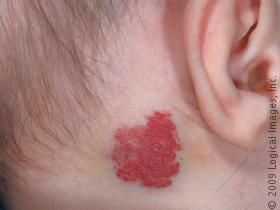 L18 slide 27 | HaemangiomaCongenital neck massL18 27 | NoSuperficial, any site | Enlarges with crying or straining; red or bluish, compressible | Red or bluish compressible mass that ENLARGES WITH CRYING or straining · 90% self-resolve | A malformation of vascular tissue. Present in the first few months of life, grows rapidly through the first year, then begins to involute at 18 to 24 months. A red or bluish soft mass, compressible, that increases in size with straining or crying, with or without a bruit. | Computed tomography and magnetic resonance imaging. | 90% resolve without any therapy — observation alone. Intervene only for airway compromise, skin ulceration, dysphagia, thrombocytopenia or cardiac failure. First line: propranolol. Second line: systemic corticosteroids, interferon alpha, or surgical laser excision.Routine | Parents need the growth-then-involution curve explained, or the rapid first year reads as failure of treatment. |
| no image on the slide | TeratomaCongenital neck massL18 28 | NoAny; noted at birth | Firm, with calcifications on imaging | Firm neck mass noted at birth or in the first year · calcifications on imaging | Head and neck teratomas account for 3.5% of all teratomas. They originate from pluripotent cells and present as firm neck masses, most commonly noted at birth or within the first year. A large one can cause respiratory compromise or dysphagia. | Computed tomography and magnetic resonance imaging — calcifications are the clue. | Surgical excision.Urgent | Size is the whole problem here: it is a benign lesion that can obstruct an airway. |
| no image on the slide | Dermoid cystCongenital neck massL18 29 | No — non-tenderMidline submental | Mobile midline mass that does NOT move with the tongue | MIDLINE, non-tender, mobile · submental | Arises from epithelium entrapped in deeper tissue during embryogenesis, or by traumatic implantation. Presents as a midline, non-tender, mobile mass in the submental region. | Clinical, with imaging to define the plane. | Surgical excision is the mainstay.Routine | One of the midline masses — thyroglossal duct cyst is the other, and that one moves with the tongue. |
| no image on the slide | Thymic cystCongenital neck massL18 29 | Only if infectedLower anterior neck | Hassall corpuscles on biopsy | Slow-growing and asymptomatic · painful only if infected · Hassall corpuscles on biopsy | Presents as a slow-growing, asymptomatic mass that may become painful if it is infected. | Magnetic resonance imaging and computed tomography help with the differential. Definitive diagnosis is by biopsy — the presence of Hassall corpuscles. | Surgical excision.Routine | The histology is the diagnosis; imaging only narrows the list. |
| no image on the slide | Sternocleidomastoid tumour of infancyCongenital neck massL18 29 | No — painlessWithin the sternocleidomastoid | Firm discrete mass with congenital torticollis | Firm painless mass WITHIN the sternocleidomastoid · related to congenital torticollis | Related to congenital torticollis. A firm, painless, discrete mass within the sternocleidomastoid muscle that enlarges for 2 to 3 months and then regresses over 4 to 8 months. | Clinical. | 80% resolve spontaneously and need only physical therapy to prevent restrictive torticollis. Surgical excision is reserved for persistent cases.Routine | The natural history is the treatment plan: it gets bigger before it gets better. |
| no image on the slide | Reactive viral lymphadenopathyInflammatory neck massL18 31 | MildCervical nodes, children | Regresses in 1–2 weeks with an upper respiratory infection | Commonest cause of cervical lymphadenopathy in CHILDREN · with an upper respiratory infection · regresses in 1–2 weeks | The commonest cause of cervical lymphadenopathy in children, associated with an underlying upper respiratory infection. Commonest pathogens are adenovirus, rhinovirus and enterovirus. Nodes regress in 1 to 2 weeks. | Observation is usually enough. A node larger than 1 cm is abnormal and needs investigation if it persists beyond 4 to 6 weeks or enlarges — biopsy then looks for fungal, granulomatous or neoplastic causes. | Observation.Routine | The two numbers that matter are 1 cm and 4 to 6 weeks; past either, it stops being reactive. |
| no image on the slide | HIV-associated cervical adenopathyInflammatory neck massL18 32 | NoNeck is the commonest site | Follicular hyperplasia after tuberculosis and lymphoma are excluded | Cervical adenopathy in 12–45% of patients with HIV · the neck is the commonest site | Cervical adenopathy is present in 12% to 45% of patients with HIV. Idiopathic follicular hyperplasia is the commonest cause. Persistent generalised lymphadenopathy — lymphadenopathy with no identifiable infectious or neoplastic cause — is also common, and the neck is its commonest site. | Rule out Mycobacterium tuberculosis, Pneumocystis carinii, lymphoma and Kaposi sarcoma before settling on hyperplasia. | Treat the HIV.Urgent | The adenopathy is a marker of control, not a separate problem to excise. |
| no image on the slide | Suppurative bacterial lymphadenopathyInflammatory neck massL18 33 | YesSubmandibular or jugulodigastric | Sore throat and skin lesions with the node | Submandibular or jugulodigastric · with sore throat, skin lesions and upper respiratory symptoms | Most commonly Staphylococcus aureus and group A beta-haemolytic Streptococcus. Masses develop in the submandibular or jugulodigastric regions, with sore throat, skin lesions and upper respiratory symptoms. | Clinical; culture if aspirated. | Empirical antibiotics against anaerobes and gram-positive organisms. Fine needle aspiration or incision and drainage if antibiotics fail.Urgent | Failure of antibiotics is the trigger to drain, not the starting point. |
| no image on the slide | ToxoplasmosisInflammatory neck massL18 33 | VariesCervical nodes | Undercooked meat or cat faeces in the history | Undercooked meat or cat faeces · fever, malaise, sore throat, myalgias | Toxoplasma gondii, contracted through poorly cooked meat or ingestion of oocytes in cat faeces. Fever, malaise, sore throat and myalgias with the adenopathy. | Serologic testing. | Sulfonamides or pyrimethamine.Routine | One of four exposure histories on the same slide — cat faeces here, cat scratch for Bartonella. |
| no image on the slide | TularemiaInflammatory neck massL18 33 | Yes — painful adenopathyCervical nodes | Rabbits, ticks or contaminated water, with tonsillitis | Rabbits, ticks, contaminated water · tonsillitis with painful adenopathy | Francisella tularensis, transmitted by rabbits, ticks and contaminated water. Tonsillitis, painful adenopathy, fever, chills, headache and fatigue. | Serologic testing and cultures. | Streptomycin.Urgent | The exposure history is the question: rabbits and ticks. |
| no image on the slide | BrucellosisInflammatory neck massL18 33 | NoTotal body, not just neck | Unpasteurised milk | Unpasteurised milk · total body lymphadenopathy | Brucella, transmitted by ingestion of unpasteurised milk, most commonly in children. Total body lymphadenopathy with fever, fatigue and malaise. | Serology and cultures. | Trimethoprim-sulfamethoxazole or tetracycline.Routine | Generalised rather than regional adenopathy is what sets it apart from the others on this slide. |
| no image on the slide | Cat scratch diseaseInflammatory neck massL18 34 | VariesPreauricular and submandibular | Cat contact, patient under 20 | Contact with cats · under 20 years · preauricular and submandibular nodes | Bartonella henselae, with a history of contact with cats. Common under 20 years of age. Lymphadenopathy — commonly preauricular and submandibular — with fever and malaise. | Serologic testing with indirect fluorescent antibodies. | Self-limiting, or azithromycin.Routine | Self-limiting is the headline; azithromycin shortens it rather than being required. |
| no image on the slide | ActinomycosisInflammatory neck massL18 34 | No — painlessSubmandibular or upper digastric | Painless and fluctuant | PAINLESS, fluctuant mass · submandibular or upper digastric | Presents as a painless, fluctuant neck mass in the submandibular or upper digastric region. | Clinical and biopsy. | Penicillin.Routine | Painless and fluctuant together is the combination that points here. |
| no image on the slide | Atypical mycobacteriaInflammatory neck massL18 34 | YesUnilateral, anterior triangle or parotid | Brawny reddish-brown skin over it, in a child | Children · UNILATERAL · brawny reddish-brown skin over the mass | A paediatric infection. A unilateral neck mass in the anterior triangle or the parotid gland, with brawny (reddish-brown) skin, induration and pain. | Stain or culture for acid-fast bacilli, plus skin testing. | Surgical excision, or incision and drainage with antibiotics.Urgent | Unilateral and paediatric here; tuberculous adenitis is more diffuse and bilateral. |
| no image on the slide | Tuberculous adenitis (scrofula)Inflammatory neck massL18 34 | VariesBilateral and diffuse | Adults more than children; acid-fast bacilli | Adults more than children · DIFFUSE and BILATERAL | Mycobacterium tuberculosis. Cervical tuberculosis is called scrofula. Adults are affected more than children, and the lymphadenopathy is more diffuse and bilateral than in atypical mycobacterial disease. | Tuberculin skin test, stain and culture for acid-fast bacilli. | Isoniazid, rifampin, rifabutin, rifapentine, pyrazinamide, ethambutol — traditionally RIPE: rifampin, isoniazid, pyrazinamide, ethambutol.Urgent | Bilateral and diffuse versus unilateral and brawny is the whole distinction from atypical mycobacteria. |
| no image on the slide | Fungal neck infectionInflammatory neck massL18 35 | VariesCervical nodes | Immunocompromised host; fungal culture and serology | Immunocompromised · Candida, Histoplasma, Aspergillus | Immunocompromised patients are particularly susceptible. The commonest organisms are Candida, Histoplasma and Aspergillus. | Fungal cultures and serology are required — the deck is emphatic about this. | Amphotericin B, treated aggressively.Urgent | Non-infectious inflammatory causes sit on the same slide: Sjögren syndrome, sarcoidosis, IgG4-related sialadenitis and Kawasaki disease. |
| no image on the slide | Neck neoplasm — generalNeck neoplasmL18 37, 39 | No — asymptomaticCervical nodes, often jugulodigastric | Firm, immobile, over 1.5 cm, present over 2 weeks | Presume any new neck mass is MALIGNANT until proven otherwise · firm, slowly progressive, asymptomatic | Benign tumours arise from the soft tissue of the neck — fat, salivary tissue, lymph nodes, blood vessels, nerves. Malignant ones are usually metastatic squamous cell carcinoma from skin or the upper aerodigestive tract. Hoarseness, dysphagia and odynophagia are the symptoms; the lesion itself is asymptomatic, slowly progressive and firm. | Complete head and neck examination, then fine needle aspiration biopsy rather than excisional biopsy — excision spills tumour and complicates definitive treatment. Fiberoptic laryngoscopy for an occult primary; ultrasound, contrast computed tomography, magnetic resonance imaging, positron emission tomography. | Directed by the primary once it is found. Once the diagnosis is confirmed, all mucosal surfaces of the head and neck, the thyroid, the salivary glands and the skin are examined — the office examination usually finds the primary.Emergent | The malignancy features from slide 13: no infectious origin, duration over 2 weeks, size over 1.5 cm, firm and non-tender with little mobility, age over 40, tobacco and alcohol, and ulceration. |
| no image on the slide | Primary neck tumours — the listNeck neoplasmL18 38 | VariesNeck soft tissue | Pulsatile or bruit means paraganglioma | Slide 38 is a picture of a table · malignant against benign, primary in the neck | Malignant: sarcomas (rhabdomyosarcoma, fibrosarcoma, malignant fibrous histiocytoma, liposarcoma, leiomyosarcoma); malignant peripheral nerve sheath tumours; lymphoma; and metastasis — mucosal cancer from head and neck, salivary malignancies, skin malignancies. Benign: vascular neoplasms, chiefly paragangliomas (carotid body, vagal, jugulotympanic); arteriovenous malformations; peripheral nerve neoplasms (schwannomas, neurofibromas, neuromas); and lipomas. | As for any neck neoplasm — fine needle aspiration first. | By tumour type.Emergent | A pulsatile mass or a bruit means vascular, and paraganglioma heads that list. |
| no image on the slide | Thyroid nodule and massThyroidL18 40–41 | NoMidline anterior neck | Elevates with swallowing; hot nodule needs no biopsy | MIDLINE mass that ELEVATES WITH SWALLOWING · the main cause of an anterior neck lump | The main cause of anterior neck masses and lumps. An immobile midline neck mass that elevates with swallowing is likely thyroid. Risk factors: age under 30 or over 60, childhood head and neck irradiation, full body irradiation for bone marrow transplant, family history of thyroid cancer, and multiple endocrine neoplasia type 2. Recent growth, dysphagia or obstruction are the concerning symptoms. | Ultrasound with fine needle aspiration, thyroid-stimulating hormone, T3 and T4. Incidental nodules over 1 cm need evaluation. If hyperthyroid with a low thyroid-stimulating hormone, do a radionuclide scan with technetium BEFORE the aspiration: a “hot” (hyperfunctioning) nodule needs no biopsy, while a “cold” or “warm” nodule does. | Determined by the biopsy. Fine needle aspiration is the diagnostic procedure of choice once primary thyroid disease has been excluded on labs.Urgent | If thyroid cancer is suspected, avoid iodine-contrast computed tomography — it compromises radioiodine treatment afterwards. |
| no image on the slide | Papillary thyroid carcinomaThyroidL18 42, 44 | NoThyroid | Commonest at 75%, best prognosis, young women | Commonest (75%) · best prognosis · young women | The commonest thyroid cancer at 75%, with the best prognosis, commonest in young females. Involves thyroid epithelial cells. | Fine needle aspiration. | Lobectomy or thyroidectomy, with or without neck dissection, ablation and surveillance. Almost all thyroid cancers need thyroidectomy, except a well-differentiated cancer localised to one lobe with no metastasis.Urgent | Commonest and kindest — the pairing is the exam point. |
| no image on the slide | Follicular thyroid carcinomaThyroidL18 42, 44 | NoThyroid | Spreads by blood to bone and lung | Second commonest (16%) · spreads by BLOOD to bone and lung | 16% of thyroid cancers, involving thyroid epithelial cells. Spreads to local lymph nodes or by blood to bone and lungs. The Hürthle cell variant is more aggressive, with a higher risk of metastases and recurrence. | Fine needle aspiration. | As for papillary: lobectomy or thyroidectomy with or without neck dissection and ablation.Urgent | Haematogenous spread is what separates it from papillary. |
| no image on the slide | Medullary thyroid carcinomaThyroidL18 42, 44 | NoThyroid | C cells and calcitonin; screen for multiple endocrine neoplasia | About 5% · parafollicular C cells · calcitonin · screen for MEN | About 5%. A disorder of the parafollicular or C cells, which produce calcitonin. More insidious, most likely to metastasise, and can go undiagnosed until a metastasis is found. | Fine needle aspiration; calcitonin. | Thyroidectomy with monitoring for recurrence on screening labs, with or without external beam radiation for nodal disease. Screen family members for multiple endocrine neoplasia.Urgent | The only one of the four with a familial syndrome to chase in the relatives. |
| no image on the slide | Anaplastic thyroid carcinomaThyroidL18 42, 44 | VariesThyroid | Elderly; death in 6–36 months | 1% · elderly · death in 6–36 months · resistant to all treatment | 1% of thyroid cancers, commonly in elderly patients. Small cell, giant cell and spindle cell types. The most aggressive form — death in 6 to 36 months — and resistant to all treatment modalities. | Fine needle aspiration; staging imaging. | Isthmectomy rather than thyroidectomy.Emergent | The one thyroid cancer where the prognosis is measured in months. |
| no image on the slide | Primary thyroid lymphomaThyroidL18 45 | NoThyroid | Hashimoto thyroiditis in the background | Associated with Hashimoto thyroiditis · non-Hodgkin B cell | Most commonly non-Hodgkin B cell tumours, associated with Hashimoto thyroiditis. | Fine needle aspiration alone cannot separate lymphoma from Hashimoto — a biopsy is needed to confirm, along with lymphoma staging. | Chemotherapy and radiation — not primarily surgical, unlike the carcinomas above.Urgent | The one thyroid malignancy where the answer is not an operation. |
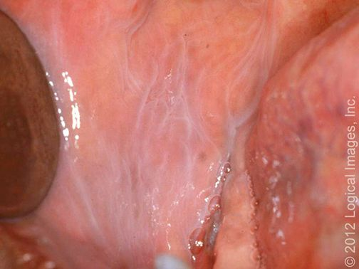 L19 slide 9 | LeukoedemaOral mucosa variantL19 9 | NoBuccal mucosa | Disappears when the mucosa is stretched | Normal variant · greyish-white buccal mucosa that DISAPPEARS WHEN STRETCHED | A common, benign mucosal change and a normal variant, caused by accumulation of fluid within the epithelial cells. Diffuse greyish-white appearance of the buccal mucosa. | Clinical. The distinguishing manoeuvre is stretching the mucosa — the change disappears, which is what separates it from leukoplakia. | None — reassurance.Routine | Naming it as a variant is the whole job; it needs no biopsy and no follow-up. |
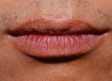 L19 slide 10 | Fordyce granulesOral mucosa variantL19 10 | NoVermilion of lip, buccal mucosa | Yellow-white papules — ectopic sebaceous glands | Normal variant · ectopic sebaceous glands · yellow-white papules on lip or buccal mucosa | Normal variants — ectopic sebaceous glands in a site where sebaceous glands are not expected. Small yellow-white papules on the vermilion of the lip and the buccal mucosa. | Clinical. | None — reassurance.Routine | Patients find them alarming because they appear suddenly to the person looking; they have always been there. |
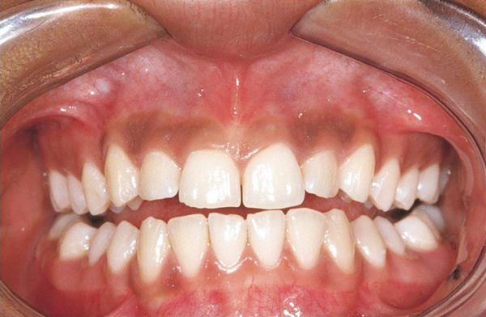 L19 slide 11 | Physiologic pigmentationOral mucosa variantL19 11 | NoGingiva and mucosa | Symmetrical melanin pigmentation, a normal variant | Normal variant · symmetrical melanin pigmentation, commoner in darker skin | Physiologic oral pigmentation is commonly seen and is a normal variant, from melanin. | Clinical. | None — reassurance.Routine | The reason it matters is the differential it sits in, not the lesion itself. |
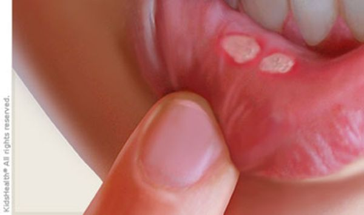 L19 slide 15 | Aphthous stomatitis (canker sores)Oral ulcerL19 15–17 | Yes — painfulNon-keratinised, freely moving mucosa | Yellow-grey fibrinoid centre with a red halo | Painful round ulcer, YELLOW-GREY fibrinoid centre with a RED HALO · on non-keratinised, freely moving mucosa | The commonest cause of acute recurrent oral ulcers in adolescents and young adults. Found on freely moving, non-keratinised mucosa — buccal and labial mucosa, non-attached gingiva, palate. Trauma (cheek biting, a dental procedure) and stress are exacerbating factors; the cause is unknown, though human herpesvirus 6 has been suggested. Minor (<1 cm) are commonest, burn and tingle first, and last 7–10 days. Major (>1 cm) are more painful, multiple, scar, and last over a month. Herpetiform are numerous 1–3 mm ulcers, scar, and last over a month. | Clinical. | Observation — it is self-limiting. Anti-inflammatories, antibiotics, antivirals, oral and topical corticosteroids (triamcinolone, fluocinonide), cauterisation with silver nitrate, Lactobacillus capsules, dilute water rinses.Routine | Recurrent aphthous stomatitis is called Sutton disease. Non-keratinised mucosa is the location rule that separates it from herpes. |
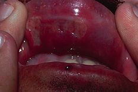 L19 slide 19 | Behcet syndromeOral ulcerL19 19 | YesOral and genital | Oral ulcers in up to 100%, genital in 75% | Oral ulcers in up to 100% · GENITAL ulcers in 75% · multisystem | An inflammatory, multisystem disorder with vascular, articular, gastrointestinal, neurologic, urogenital, pulmonary and cardiac involvement. Oral ulcers are the commonest feature, affecting up to 100% of patients. Genital ulcers occur in about 75% and look like oral aphthae. | Clinical — recurrent aphthous ulceration in the context of the characteristic systemic manifestations. | No cure. Corticosteroids, intravenous immunoglobulin, immunosuppressives — colchicine, azathioprine, cyclosporine-A, interferon alpha, cyclophosphamide.Urgent | The oral ulcers look ordinary; it is the genital ulcers and the systemic features that make the diagnosis. |
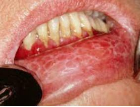 L19 slide 21 | Oral lichen planusOral ulcerL19 20–22 | Varies — erosive types hurtBuccal mucosa, tongue, lips | Wickham striae — lacy white lines | WICKHAM STRIAE — lacy white lines on buccal mucosa · 1–4% become squamous cell carcinoma | A common chronic inflammatory autoimmune disorder in which the basal layer is destroyed by activated lymphocytes. May be familial or drug-induced (penicillamine, methyldopa, phenothiazine, antimalarials). Classically purple, polygonal, pruritic papules on flexor surfaces and trunk; 60–70% affect lips, oral mucosa and eyelids, and the oral lesions are more chronic. Kobner isomorphic phenomenon — lesions provoked by physical trauma. Types: reticular (lacy white Wickham striae), plaque (looks like leukoplakia), atrophic, erosive and bullous, ulcerative, annular. | Clinical, with biopsy where malignancy is a concern. | Aimed at pain relief. Identify reversible contributors — medications, dental restorations, oral hygiene, tobacco and alcohol. Topical or oral corticosteroids; lidocaine, tacrolimus, cyclosporine.Urgent | 1–4% progress to squamous cell carcinoma, and the risk is higher with ulcerative lesions — which is why close follow-up is the point of the diagnosis. |
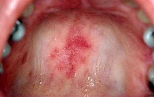 L19 slide 23 | Systemic lupus erythematosus — oralOral ulcerL19 23–24 | VariesLips, soft and buccal mucosa | Honeycomb patches; may be the first sign of lupus | 40% of patients with lupus · oral lesions may be the FIRST SIGN · honeycomb patches | 40% of patients with systemic lupus erythematosus have mucous membrane involvement, and oral lesions may be the first sign of lupus. Painful or painless, with no correlation to systemic activity. Lesions: cheilitis, erythematous patches, honeycomb patches, discoid and discrete ulcers. White plaques, erythematous areas and punched-out erosions with surrounding erythema on the soft and buccal mucosa. | Clinical, with serology for the systemic disease. | Photoprotection plus medication: topical or intralesional corticosteroids, topical calcineurin inhibitors, systemic glucocorticoids, and systemic antimalarials — hydroxychloroquine or chloroquine.Urgent | The oral ulcers do not track disease activity, so they cannot be used to judge control. |
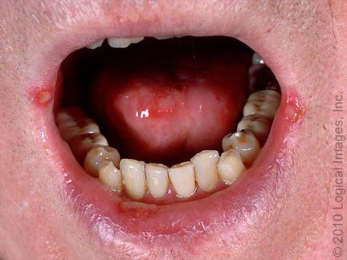 L19 slide 25 | Herpes simplex ulcersOral ulcerL19 25–27 | YesPerioral and oral, keratinised surfaces | Burning prodrome ~24 h before the lesion | Prodrome of burning and tingling ~24 h BEFORE the lesion · recurrence from the trigeminal ganglion | Herpes simplex virus 1 and 2. Herpetic gingivostomatitis is the commonest manifestation of primary infection in children and young adults, with fever, malaise and cervical lymphadenopathy. Secondary disease is recurrence of dormant virus from the trigeminal ganglion, triggered by stress, trauma, immunosuppression or ultraviolet light. Small painful lesions that ulcerate, leaving an erythematous base with a grey cover; heals without a scar; resolves in 1–2 weeks. | Clinical, but confirm with polymerase chain reaction for HSV DNA — most sensitive and specific. Serology with IgG and IgM distinguishes HSV 1 from HSV 2. Tzanck smear shows multinucleated giant cells but is also positive in varicella zoster, so it is not the best test. | Oral acyclovir for treatment and prophylaxis.Routine | The 24-hour prodrome is the window in which treatment works best, so patients are taught to recognise it. |
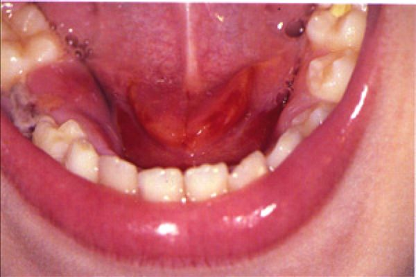 L19 slide 35 | Acute suppurative sialadenitisSalivary glandL19 34–39 | Yes — firm, diffusely tenderParotid, unilateral | Pus expressed from the duct | PAROTID swelling, firm and diffusely tender · PUS EXPRESSED FROM THE DUCT · dehydrated post-operative or elderly patient | Bacterial infection of a salivary gland, beginning with stasis of salivary flow. Occurs in post-operative patients, elderly patients with chronic conditions, and children under 2 months. Risk factors: dehydration, trauma, immunosuppression, chemotherapy or radiation, age over 50, HIV, xerostomia, sialolithiasis, anorexia and bulimia. Staphylococcus aureus is the commonest pathogen. The parotid is most commonly affected: unilateral, firm, diffusely tender, with overlying erythema, trismus, purulent ductal discharge, induration, fever and chills. | Clinical is usually sufficient. If uncertain: culture, and ultrasound, computed tomography or magnetic resonance imaging to look for stones, abscess or gland inflammation. | Rehydration plus intravenous antibiotics with penicillinase-resistant gram-positive cover (nafcillin or cefazolin), then oral (dicloxacillin, clindamycin). Warm compresses, massage, sialogogues (lemon drops or vitamin C lozenges), oral hygiene. No improvement in 48 hours means presume an abscess.Urgent | Submandibular disease that fails treatment can mimic Ludwig angina, which threatens the airway. |
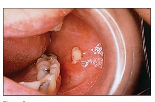 L19 slide 36 | SialolithiasisSalivary glandL19 40–43 | Yes — with eatingSubmandibular duct in 80–90% | Salivary colic — swelling and pain on eating | Recurrent swelling and pain WORSE WITH EATING (salivary colic) · 80–90% SUBMANDIBULAR | Salivary calculi. Change in saliva viscosity, ductal injury or stagnation causes calcium phosphate and calcium carbonate to precipitate. 80–90% occur in the submandibular gland — the duct runs a longer course, and the saliva has higher mucin, alkaline content, calcium and phosphate. 10–20% parotid. Commoner in men. Risk: long illness with dehydration, gout, diabetes, hypertension. | Usually clinical. Submandibular stones are calcium phosphate and hydroxyapatite, so they are RADIOPAQUE and visible on plain films. Ultrasound shows an echogenic structure with acoustic shadow; computed tomography is the most sensitive; digital subtraction sialography is the most accurate. Stones may be palpable in the anterior two thirds of the duct. | By location and size: intraoral extraction if palpable or visible anteriorly; gland excision for large stones in the hilum or body; sialoendoscopy, the minimally invasive option that can avoid removing the gland; lithotripsy. Conservative: hydration, hot compresses, massage, non-steroidal anti-inflammatories, lozenges.Routine | Pain that arrives with the first mouthful and settles afterwards is the history that makes this diagnosis without any test. |
| no image on the slide | ParotitisSalivary glandL19 44 | YesParotid | Mumps is the classic viral cause | Painful parotid swelling · mumps (paramyxovirus) is the classic viral cause | Painful swelling of the parotid gland. Causes: viral — mumps (paramyxovirus), herpes, Epstein-Barr virus — and also bacterial infection, diabetes, tumours, stones and dental problems. | Clinical; serology where mumps is suspected. | Directed at the cause.Routine | It is a presentation, not a single disease — the work is deciding which of the causes it is. |
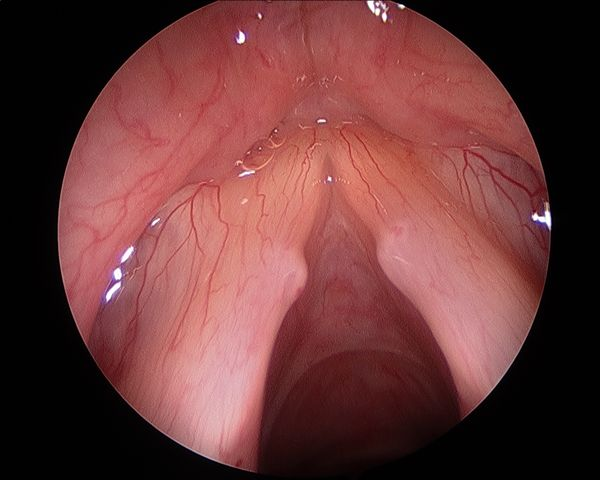 L19 slide 47 | Vocal cord nodulesVocal cord and larynxL19 46–47 | NoAnterior third / posterior two thirds junction | Bilateral and symmetric | BILATERAL and SYMMETRIC · junction of the anterior one third and posterior two thirds · vocal abuse | Smooth, paired lesions at the junction of the anterior one third and posterior two thirds of the vocal folds, from vocal abuse. The commonest cause of persistent dysphonia in children — screamers' nodules, and a frequent cause of voice deterioration in professional singers — singers' nodules. | Laryngoscopy: small, well-defined lesions with a whitish hue, bilateral and symmetric. | Speech therapy is first line in adults and children. Photodocumentation in the voice clinic tracks progress; microlaryngoscopy if needed.Routine | Bilateral and symmetric is the finding that separates nodules from a polyp, which is unilateral. |
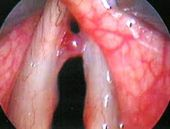 L19 slide 48 | Vocal cord polypsVocal cord and larynxL19 48 | NoSuperficial lamina propria, one fold | Unilateral and pedunculated | UNILATERAL, pedunculated · men with vocal abuse and heavy smoking | Unilateral masses forming within the superficial lamina propria of the vocal fold, commoner in men with a history of vocal abuse and heavy smoking. Fluid-filled and gelatinous, pedunculated, sometimes with visible vascular markings, at the point of maximal vibration. | Microlaryngoscopic examination with excision — which both confirms the diagnosis and excludes other pathology. | Excision of the polyp, with continued vocal rest and smoking cessation.Urgent | A large polyp may conceal an occult early laryngeal squamous cell carcinoma, which is why it is excised rather than watched. |
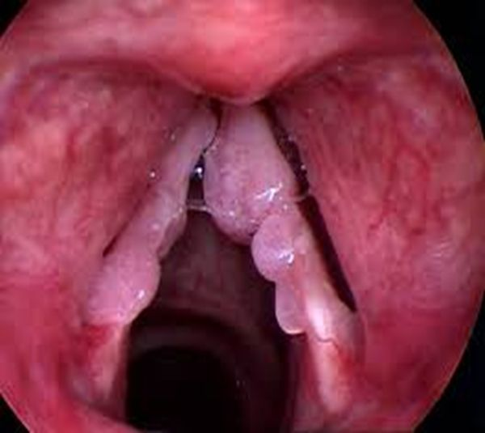 L19 slide 49 | Vocal cord papillomatosisVocal cord and larynxL19 49–52 | NoTrue and false cords | Warty exophytic growths; HPV 6 and 11 | Warty exophytic growths in the larynx · HPV 6 and 11 · bimodal — ages 2–4 and the 30s | Recurrent respiratory papillomatosis: benign, non-contagious, rare, with exophytic warty lesions usually in the larynx but also nose, pharynx and trachea. Human papillomavirus subtypes 6 and 11, rarely 16. Bimodal: juvenile between 2 and 4 years, adult peaking in the 30s. Multiple friable irregular warty growths affecting true and false cords, at points of air turbulence and at the change from ciliary to squamous epithelium. Glottic lesions cause dysphonia; supraglottic lesions cause stridor. | Laryngoscopy. | No curative measure for the virus — the aim is removing symptomatic lesions with minimal morbidity: carbon dioxide laser resection, cold steel dissection, laryngeal microdebrider. Avoid tracheostomy, which introduces another squamociliary junction the papillomas favour. Adjuvant intralaryngeal cidofovir is off-label.Urgent | 3–7% risk of malignant transformation. Gardasil and Gardasil 9 offer eventual prevention. |
| no image on the slide | Vocal cord paralysisVocal cord and larynxL19 53–56 | NoOne or both folds | Unilateral breathy voice; bilateral stridor | Unilateral: hoarse BREATHY voice · bilateral: STRIDOR with a weak cry | One or both folds fail to open or close properly. Causes: injury during surgery to thyroid, parathyroid, oesophagus, neck or chest; neck or chest injury; tumours; infections (Lyme disease, Epstein-Barr virus, herpes); neurological disease (stroke, multiple sclerosis, Parkinson disease). Unilateral gives hoarse breathy dysphonia, aspiration, dysphagia, vocal fatigue — and may be asymptomatic. Bilateral gives inspiratory or biphasic stridor, weak cry, aspiration. | Mirror laryngoscopy or flexible nasolaryngoscopy plus a full neurological examination. Determine whether the lesion is the recurrent laryngeal nerve or the vagus, and whether it is unilateral or bilateral. | Decide whether it is self-limiting or permanent. Observation with voice therapy; surgical medialisation of the affected fold, or thyroplasty.Urgent | Laryngeal electromyography predicts recovery: a transected or tumour-infiltrated nerve will not recover, while a bruised or stretched one may return over 6 months to a year. |
| no image on the slide | Acute laryngitisVocal cord and larynxL19 57 | MildLarynx | Hoarseness persisting a week after the cold clears | Commonest cause of hoarseness · persists about a week after the upper respiratory infection clears | The commonest cause of hoarseness, persisting about a week after upper respiratory symptoms have cleared. Viral (rhinovirus commonest, parainfluenza, respiratory syncytial virus, adenovirus, influenza, pertussis), bacterial or fungal; also acid reflux, smoking, toxic inhalation, cough, vocal abuse, direct injury and allergy. Dysphonia, low-grade fever, hoarseness, cough, rhinitis and postnasal drip. | Clinical. | Conservative: hydration, antipyretics, voice rest, decongestants, humidification, smoking cessation. Antibiotics are not indicated unless a secondary bacterial infection is suspected.Routine | Voice rest is the treatment patients most often skip and most need. |
| no image on the slide | Chronic laryngitisVocal cord and larynxL19 58 | NoLarynx | Over 2 weeks — scope it, do not treat it | Voice disturbance lasting more than 2 weeks · NOT a true diagnosis — work it up | Voice disturbance lasting more than two weeks. Not a true diagnosis — always work up the underlying condition. | Refer to ear, nose and throat for laryngoscopy. Laryngeal cancer and vocal cord polyps must be considered. | Treat what the laryngoscopy finds.Urgent | Two weeks of hoarseness is the threshold at which a smoker gets scoped, not reassured. |
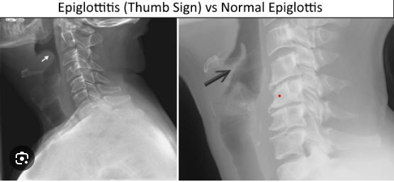 L19 slide 64 | Epiglottitis (supraglottitis)Airway emergencyL19 60–67 | Severe — odynophagiaSupraglottis | Tripod position, drooling, muffled voice; thumbprint sign | ENT EMERGENCY · the 4 Ds in children — Drooling, Dysphagia, Dysphonia, Distress · TRIPOD position | More correctly supraglottitis: cellulitis involving multiple areas of the supraglottis. Acute disease presents in children aged 2 to 6, though any age can be affected. Commonest pathogen is Haemophilus influenzae type B — incidence has fallen over 90% since the vaccine. Others: Streptococcus pneumoniae, Staphylococcus aureus, beta-haemolytic streptococci. Children: the 4 Ds. Adults: severe sore throat, dysphagia, odynophagia, fever, dyspnoea, cough; muffled voice, stridor and drooling in under 10%. Sudden onset progressing over hours in children, more slowly in adults. Classic picture is an irritable patient sitting or leaning forward, neck hyperextended, chin thrust forward. Inspiratory stridor is a LATE finding — the airway is nearly obstructed. | Once suspected, do NOT perform an intraoral examination or venipuncture — the anxiety they cause may complete the obstruction. Lateral neck X-ray shows the “thumb print” sign, but is not necessary for diagnosis. Mirror or fiberoptic laryngoscopy is the gold standard. | Airway, antibiotics, prevention. Paediatric: to theatre for rigid bronchoscopy and emergency tracheotomy standby; inhalation anaesthesia, confirm the diagnosis, secure the airway by intubation; blood cultures and supraglottic swab; parenteral antibiotics — extubation is often possible within 48 to 72 hours. Adult: observation, intubation or tracheostomy if the airway obstructs, humidification, glucocorticoids, intravenous antibiotics, nebulised adrenaline. Third-generation cephalosporin plus an antistaphylococcal agent — ceftriaxone or cefotaxime with vancomycin for 7–10 days.Emergent | The mortality is what justifies the caution: rare, but high if it is not recognised and treated promptly. |
| no image on the slide | Viral pharyngitisPharynxL19 70, 72 | Yes — sore throatPharynx | Cough, rhinitis and conjunctivitis alongside | 70% of pharyngitis · COUGH, rhinitis, conjunctivitis · herpangina — ulcerative vesicles over the tonsils | 70% of pharyngitis. Adenovirus, Epstein-Barr virus, herpes simplex, HIV, influenza, parainfluenza, rhinovirus, coronavirus, echovirus, enteroviruses, coxsackievirus. Sore throat with earache or headache, cough, rhinitis, laryngitis, hoarseness, fever, conjunctivitis, lymphadenopathy. Herpangina is ulcerative vesicles over the tonsils. | Clinical — no further testing. | Supportive: hydration, antipyretics, analgesia.Routine | The presence of cough and coryza is what argues against streptococcal disease, and it is a Centor point. |
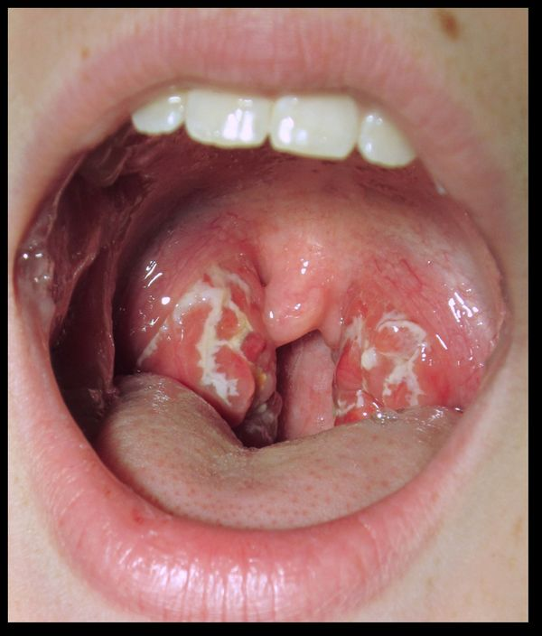 L19 slide 73 | Bacterial pharyngitis (GABHS)PharynxL19 73–77 | YesTonsils and pharynx | Exudate, fever, tender nodes and NO cough | Group A beta-haemolytic Streptococcus · fever, exudate, tender nodes and NO COUGH | 30% of pharyngitis; the commonest bacterial cause is group A beta-haemolytic Streptococcus. Common in adolescents and children but not under 3 years. Peaks in winter and spring; droplet spread; incubation 2–5 days. Fever above 100.4 °F, sore throat, cervical lymphadenopathy, dysphagia, odynophagia, LACK OF COUGH, abdominal pain. Tonsillar and pharyngeal erythema with purulent exudate. | Rapid antigen detection test; a negative rapid test is always confirmed with a throat culture. Definitive test is antistreptolysin O, useful because carriers have a positive culture while asymptomatic. Centor criteria (slide 76): age 3–14 +1, age 15–44 0, age 45 or over −1; absence of cough +1; tonsillar exudate +1; fever +1; tender anterior cervical lymphadenopathy +1. | Symptomatic care plus antibiotics: penicillin VK for 10 days, or amoxicillin. Intramuscular penicillin G if compliance or oral intake is a concern. Mild penicillin allergy: cephalexin or cefadroxil. Severe allergy: macrolides or clindamycin.Urgent | Treatment is as much about preventing rheumatic fever as about the sore throat. |
| no image on the slide | Rheumatic feverPharynxL19 78–79 | VariesHeart, joints, skin | 2–3 weeks after an untreated strep throat | Sequela of untreated GABHS · appears 2–3 weeks after · peak ages 5–15 | A rare complication of untreated group A beta-haemolytic streptococcal infection, from cross-reactive antibodies produced against the streptococcus that attack heart muscle — endocarditis, myocarditis or pericarditis. Signs appear 2 to 3 weeks after the infection, sometimes as early as one week or as late as five. Peak incidence between 5 and 15 years; rare before 4 and after 40. Typically resolves after about six weeks. | Clinical, against the Jones criteria (slide 79), with evidence of preceding streptococcal infection. | Treat and eradicate the streptococcal infection; manage the carditis.Urgent | This is the reason a sore throat gets an antibiotic at all — the throat would settle without one. |
| no image on the slide | Chronic pharyngitisPharynxL19 80 | MildPharyngeal wall | Thickened, granular wall with crusting | Constant throat clearing · thickened, granular pharyngeal wall with crusting | Causes: postnasal drip from chronic rhinosinusitis, irritants (dust, dry heat, chemicals, smoking, alcohol), chronic mouth breathing, voice abuse, allergy, granulomatous disease, connective tissue disorder, malignancy. Constant throat clearing, dry throat, odynophagia, a thickened and granular pharyngeal wall, and pharyngeal crusting. | Clinical; culture and biopsy if treatment fails. | Address the underlying disorder, avoid precipitants, treat symptoms.Routine | Malignancy is on the causes list, so failed therapy earns a biopsy rather than another course of something. |
| L19 slide 83 | Infectious mononucleosisPharynxL19 81–87 | YesTonsils and cervical nodes | Fever, tonsillar pharyngitis, cervical adenopathy plus splenomegaly | Triad: fever, tonsillar pharyngitis, cervical lymphadenopathy · 15–24 years · splenomegaly | Highly contagious; 90–95% of adults are Epstein-Barr virus seropositive. Commonly 15 to 24 years. Spread by oral contact or infected saliva. Epstein-Barr virus in 90%, cytomegalovirus and others in 10%. Prodrome of malaise, headache and low-grade fever — or asymptomatic under 10 years. Triad of fever, tonsillar pharyngitis with or without exudate, and cervical lymphadenopathy. Also palatal petechiae, hepatomegaly, splenomegaly, and a maculopapular rash in 5%. | Clinical plus confirmation. Monospot / heterophile antibody test is very sensitive and specific — positive means no further testing, but it can be falsely negative in the first week, because heterophile antibodies take about a week to develop. Slide 84 prints “falsely positive”, which is an error. Prof. Shah read it as written at [1:45:26], a student asked whether it was supposed to say false negative, and she confirmed it at [1:47:49]. Minutes earlier she had taught the false-negative pathway herself: “you order that monospot test and you’re like, hold on, that came back NEGATIVE but this patient walks and talks like they have mono… serology will help you”. The same slide already contradicts itself: it sends you to serology for a negative heterophile test in suspected mono, which is the false-negative pathway. Serology: IgG means past infection, IgM means current; useful under 4 years, with a negative heterophile test, or with atypical symptoms. Polymerase chain reaction detects viral DNA. | Supportive — there is no antiviral therapy. Corticosteroids for severe respiratory compromise. Avoid heavy lifting and contact sports for about a month, until the splenomegaly has resolved, to prevent splenic rupture.Urgent | Giving penicillin triggers an exanthem — the classic sequence is a sore throat treated as strep, a rash, and then the real diagnosis. |
| no image on the slide | DiphtheriaPharynxL19 112–114 | Mild sore throatTonsils and pharynx | Tenacious grey membrane | Tenacious GREY MEMBRANE over tonsils and pharynx · unimmunised child | Corynebacterium diphtheriae, attacking the respiratory tract and sometimes mucous membrane or skin wounds, spread by respiratory secretions. Nasal, laryngeal, pharyngeal (commonest) and cutaneous forms. Common in unimmunised children over 6 years. Nasal: discharge. Laryngeal: upper airway and bronchial obstruction. Pharyngeal: a tenacious grey membrane covering tonsils and pharynx, with mild sore throat, fever, malaise, toxaemia and prostration. Complications: myocarditis (arrhythmia, heart block, failure) and neuropathy involving cranial nerves first — diplopia, slurred speech, difficulty swallowing. | Clinical, confirmed by culture. Differentiate from streptococcal pharyngitis, mononucleosis, adenovirus, herpes simplex and candidiasis. | Laryngoscopy or bronchoscopy to prevent or relieve obstruction. Antitoxin for all — obtained from the Centers for Disease Control. Penicillin 250 mg four times daily or erythromycin 500 mg four times daily for 14 days. Isolate until three consecutive cultures after therapy are negative. Treat contacts with erythromycin for 7 days.Emergent | Prevention is immunisation: childhood schedule plus boosters, and Tdap in every pregnancy between 27 and 36 weeks. |
| L19 slide 89 | Oral candidiasis (thrush)Oral lesionL19 88–90 | YesBuccal mucosa and tongue | White patches that RUB OFF | Creamy white curd-like patches that WIPE OFF, leaving an erythematous base | Candida albicans; Aspergillus may also be cultured. Common in infants and the immunosuppressed. Risk factors: dentures, poor oral hygiene, diabetes, anaemia, chemotherapy or local irradiation, corticosteroids, broad-spectrum antibiotics, age, HIV. Creamy white curd-like patches on an erythematous base, painful, granular, usually on buccal mucosa and tongue, with fever, lymphadenopathy, odynophagia and taste change. | Clinical. Potassium hydroxide preparation shows spores and pseudohyphae. | Saline and peroxide washes; topical antifungals — nystatin suspension, clotrimazole, ketoconazole, fluconazole. HIV patients may need longer fluconazole; refractory disease needs itraconazole or voriconazole.Routine | The patches rub off with a tongue depressor. Leukoplakia and lichen planus do not — that single manoeuvre separates three diagnoses. |
| no image on the slide | Cervical adenitisDeep neck infectionL19 91–94 | Varies — tender means inflammatoryAnterior cervical node | Unilateral solitary node; immobile suggests malignancy | A SIGN, NOT A DIAGNOSIS · typically unilateral, solitary, anterior node | Inflammation of a lymph node, often used synonymously with lymphadenopathy. Cervical lymphadenopathy is a sign, not a diagnosis. Infectious causes include toxoplasmosis, tuberculosis, brucellosis, primary herpes simplex, syphilis, cytomegalovirus, HIV, histoplasmosis and chickenpox; also inflammatory, degenerative and neoplastic causes. The typical case is a unilateral, solitary, anterior cervical node: about 70% beta-haemolytic streptococcus, 20% staphylococcus including MRSA, 10% viruses, atypical mycobacteria and Bartonella henselae. | Response to specific antibiotics can help confirm or exclude. Fine needle aspiration if the node persists or keeps enlarging — that can signal malignancy. Describe size, shape, mobility (immobile suggests malignancy), consistency and tenderness (tender = inflammatory, non-tender = malignancy). | Treat the underlying cause. Incision and drainage if there is an abscess.Urgent | Scarred nodes may stay palpable long after the infection has gone, which is not failure. |
| L19 slide 96 | Peritonsillar abscess (quinsy)Deep neck infectionL19 96–101 | SevereBetween tonsil capsule and pharyngeal muscle | Trismus, uvular deviation, hot potato voice | Classic triad: TRISMUS, UVULAR DEVIATION, DYSPHONIA · “hot potato” voice | Purulence between the capsule of the palatine tonsil and the pharyngeal muscles, beginning as a complication of untreated strep throat or tonsillitis. The commonest deep infection of the head and neck, especially in young adults, adolescents and children; commoner in males. Aerobes: group A beta-haemolytic streptococcus, Staphylococcus aureus, Haemophilus influenzae. Anaerobes: Prevotella, Porphyromonas, Fusobacterium, Streptococcus. Severe sore throat, fever, odynophagia, medial deviation of the soft palate and peritonsillar fold, uvular deviation, hot potato voice, trismus, dysphagia. | Clinical, confirmed by the purulent drainage obtained. Contrast computed tomography shows the extent; ultrasound distinguishes abscess from cellulitis and can guide needle aspiration. | Secure the airway first if needed. Needle aspiration and incision and drainage. Antibiotics: parenteral amoxicillin-clavulanate or clindamycin, adding MRSA cover if severe; oral if tolerated. Tonsillectomy for recurrent tonsillitis and recurrent abscesses, usually after the acute infection settles — quinsy tonsillectomy during infection is occasional.Emergent | Trismus is the most reliable symptom; the dysphonia comes from vagus nerve involvement failing to elevate the palate. |
| L19 slide 105 | Retropharyngeal abscessDeep neck infectionL19 103–107 | YesRetropharyngeal space | Widened retropharyngeal space on lateral X-ray | SURGICAL EMERGENCY · child under 5 · widened retropharyngeal space on lateral neck X-ray | An abscess in the retropharyngeal space, running from the base of skull to the posterior mediastinum. May spread from a peritonsillar abscess or from a node in that space. Commoner in children under 5 after upper respiratory infection, otitis media or sinusitis; in adults it follows intraoral procedures, trauma, foreign bodies such as fishbone, immunocompromise or odontogenic spread. Group A beta-haemolytic streptococcus, Staphylococcus aureus, Haemophilus influenzae, mixed flora. Early: fever, sore throat, pharyngeal erythema, dysphagia, odynophagia, neck stiffness, trismus. Late: ill appearance, drooling, leaning forward with the neck extended, respiratory distress. | Labs; lateral neck X-ray shows a widened retropharyngeal space; lateral neck computed tomography is the gold standard, showing a rim-enhancing hypodense collection. Distinguishing abscess from adenitis is the point. | Protect the airway. Surgical emergency. Antibiotics covering streptococci, anaerobes and Staphylococcus aureus: ampicillin-sulbactam, or clindamycin with ceftriaxone; vancomycin or linezolid if not improving; switch to oral on clinical improvement.Emergent | Mediastinitis carries 50% mortality. Other complications: respiratory distress, rupture with aspiration pneumonia, and spread into the danger space, which is continuous left to right and leads directly to the thorax. |
| L19 slide 109 | Ludwig anginaDeep neck infectionL19 108–111 | YesFloor of mouth, submental and submandibular | Tongue displaced up and back | EMERGENCY · floor of mouth, submental, sublingual and submandibular spaces · TONGUE PUSHED UP AND BACK | A severe infection of the floor of the mouth and the submental, sublingual and submandibular spaces. Can rapidly compromise the upper airway and force a surgical airway. Streptococci, staphylococci, Bacteroides, Fusobacterium, Klebsiella — the last usually in patients with diabetes, who have a more aggressive course. Oedema and erythema of the upper neck under the chin and the floor of the mouth; the tongue is displaced upwards and backwards by posterior spread of cellulitis; pus coalescing at the floor of the mouth. | Computed tomography with contrast, to separate inflammation and phlegmon from abscess and define the extent for the surgeon. | Antibiotics: penicillin with metronidazole, ampicillin-sulbactam, clindamycin, or selected cephalosporins. External drainage via bilateral submental incision if the airway is threatened or medical therapy fails. Dental consultation to deal with the offending tooth.Emergent | It is usually odontogenic, which is why the dental referral is part of the treatment rather than an afterthought. |
| L19 slide 116 | Dental abscessDentitionL19 116–117 | YesTooth pulp or gum | Periapical, gingival, periodontal or pericoronal pus | Pus inside the tooth or gums · from bacterial infection of the soft pulp | A build-up of pus inside the teeth or gums, from bacterial infection accumulating in the soft pulp of the tooth. Slide 116 divides them into periapical (at the root tip), gingival (in the space between gum and tooth), periodontal (in a periodontal pocket) and pericoronal (around an impacted or partially erupted tooth). | Clinical, with dental imaging. | Antibiotics — amoxicillin, ampicillin-sulbactam, amoxicillin-clavulanate, azithromycin, clindamycin, erythromycin, cephalexin, metronidazole, penicillin VK. Incision and drainage. Root canal if the tooth can be restored; extraction with curettage of apical tissue if it cannot.Urgent | Untreated, infection from a tooth can spread to the jaw, the brain or the sinus — and Ludwig angina is the neck version of that spread. |
| L19 slide 122 | Gingivitis and periodontitisDentitionL19 118–122 | Little to noneGum line | Gums bleed easily; gingivitis is reversible | Gums erythematous, oedematous and BLEED EASILY with little discomfort · gingivitis is REVERSIBLE | Chronic infection of the gingiva beginning with bacterial plaque at the gum line. Gingivitis is the mildest form: erythematous, oedematous gums that bleed easily, with little or no discomfort, caused by inadequate oral hygiene — and reversible with professional treatment and good home care. Untreated it becomes periodontitis: plaque spreads below the gum line, bacterial toxins provoke a chronic inflammatory response in which the body turns on itself, gums separate from teeth, pockets form and become infected, the periodontal ligament and bone are destroyed, and teeth loosen and fall out. Risk: diabetes, smoking, ageing, genetics, stress, poor nutrition, puberty, pregnancy, substance abuse, HIV and certain medications. Gram-negative organisms. | Clinical and dental examination. | Professional cleaning and oral hygiene — brushing, flossing, mouthwash — and modifying risk.Routine | Periodontal disease and dental caries are the primary causes of tooth loss. The slides also link gum disease to endocarditis risk, pneumonia, osteoporosis and, in men, kidney, pancreatic and blood cancers. |
| no image on the slide | Dental caries, pulpitis and periapical abscessDentitionL19 123–124 | YesTooth | Decay first, injury second | Tooth decay is the commonest cause; injury second · severe inflammation kills the pulp | Common teeth diseases are cavities, pulpitis, periapical abscess, impacted teeth and malocclusion. The commonest cause of pulpitis and periapical abscess is tooth decay, and the second commonest is injury. Mild inflammation, if relieved, may not damage the pulp permanently; severe inflammation kills it. Pulpitis can lead to a pocket of pus at the root — a periapical abscess. | Clinical and dental imaging. | Dental treatment of the decay; root canal or extraction as for dental abscess.Urgent | Untreated, infection from a tooth can spread to the jaw or beyond — brain or sinus. |
| no image on the slide | Impacted teethDentitionL19 125 | VariesUsually wisdom teeth | Overcrowding with no room to erupt | Overcrowding · wisdom teeth are the usual ones · more likely to become infected | Impaction is usually caused by overcrowding and insufficient room for a new tooth to emerge. Wisdom teeth are the usual culprits, being the last permanent teeth to erupt into a jaw that may not accommodate them. Impacted teeth are more likely to become infected. | Clinical and dental imaging. | Usually removed — they are of little use in chewing.Routine | A pericoronal abscess is the complication that links this row to the dental abscess row. |
| L19 slide 126 | MalocclusionDentitionL19 126 | NoBite | Class I, II or III occlusion | Abnormal alignment of teeth and bite · Class I, II and III | Abnormal alignment of the teeth and the way upper and lower teeth fit together. Normal chewing produces about 150 lb of force on the molars, and about 250 lb when clenching during sleep; if that force is unevenly distributed, teeth wear, fracture or loosen. Causes: size mismatch between jaw and teeth, thumb sucking or tongue thrusting, lost teeth, birth defects. Slide 126 illustrates Class I normal occlusion, Class II distal occlusion and Class III mesial occlusion. | Clinical and dental assessment. | Braces or aligners, removal of teeth, or surgery.Routine | The force numbers are the reason a bite problem becomes a structural one. |
| no image on the slide | Temporomandibular joint disordersJawL19 128–131 | YesTemporomandibular joint and muscles | Clicking, popping or locking with limited opening | Second commonest musculoskeletal cause of pain and disability · jaw pain with clicking, popping or locking | Disorders affecting the temporomandibular joint, the masticatory muscles, or both. The second commonest musculoskeletal condition causing pain and disability. Common in women of childbearing age, with a possible link to female sex hormones. Predisposing: trauma — a blow to the jaw or whiplash — and stress, which disrupts sleep and increases nocturnal bruxism. Perpetuated by stress, poor coping, clenching and grinding, and poor posture. Three categories: myofascial pain, internal derangement (displaced disc, dislocated jaw, condylar injury), and arthritis. Jaw, face and head pain; limited opening, catching or locking; clicking, popping or grating; headache, neck and shoulder pain; tinnitus, ear fullness, hearing loss, dizziness; abnormal tooth wear and sensitivity. | Clinical. Computed tomography or magnetic resonance imaging is reserved for abnormal pain or dysfunction not responding to short-term therapy, or a sudden change in bite or mandibular asymmetry. | Eliminate pain and restore function: self care; non-steroidal anti-inflammatories, muscle relaxants (cyclobenzaprine), low-dose tricyclics (amitriptyline, desipramine, nortriptyline); oral steroids if there is synovitis; physical therapy, transcutaneous electrical nerve stimulation, acupuncture, local anaesthesia, mouth guards, arthrocentesis, arthroscopy, surgery.Routine | The ear symptoms are the trap — tinnitus, fullness and dizziness send these patients to an ear examination that is normal. |
| L19 slide 133 | Oral leukoplakiaOral lesionL19 133–134 | NoOral mucosa | White and CANNOT be scraped off | White lesion that CANNOT be scraped off · premalignant — 5–20% become squamous cell carcinoma | A premalignant squamous lesion: altered epithelium at increased risk of progression to squamous cell carcinoma, 5–20%. Defined as a white lesion of the oral mucosa that cannot be scraped off and cannot be attributed to another definable lesion. Causes include chronic irritation, smoking and infection. | Excisional biopsy to rule out malignancy. Complete intraoral examination and palpation for lymphadenopathy. | Observation after eliminating carcinogenic irritants — smoking, chewing tobacco, alcohol — with serial biopsies and excisions.Urgent | The scrape test is the bedside discriminator: candidiasis wipes off, leukoplakia does not. |
| L19 slide 135 | ErythroplakiaOral lesionL19 133, 135 | NoOral mucosa | Red — 90% dysplastic or carcinoma | Like leukoplakia but RED · 90% are dysplastic or carcinoma · far more dangerous | As leukoplakia but with an erythematous component. 90% are either dysplastic or already carcinoma, and the risk of malignancy is around 25% — substantially higher than leukoplakia. Alcohol and tobacco are the major risk factors. | As for leukoplakia — excisional biopsy. | As for leukoplakia, but the threshold for excision is lower.Emergent | Red is worse than white. If one lesion on the slide deck earns urgency, it is this one. |
| L19 slide 136 | Hairy leukoplakiaOral lesionL19 136 | No — painlessLateral tongue | Waxes and wanes; think HIV | Painless LATERAL TONGUE lesion that waxes and wanes · EBV · strongly associated with HIV | Benign mucosal hyperplasia associated with Epstein-Barr virus, long-term systemic corticosteroids and solid organ transplantation. Strongly associated with HIV and a common early finding in HIV infection. Painless lateral tongue lesions that wax and wane over time. | Clinical and biopsy. | Observation. Acyclovir, valacyclovir or famciclovir produce temporary resolution.Urgent | The lesion itself is benign; its value is as a pointer to undiagnosed HIV. |
| no image on the slide | Salivary gland neoplasmOral and salivary neoplasmL19 139–143 | No — painlessTail of the parotid | Slow-growing painless mass; pain suggests malignancy | Slow-growing PAINLESS mass at the TAIL OF THE PAROTID · the smaller the gland, the likelier it is malignant | 64–80% arise in the parotid, and 75–80% of those are benign. 7–15% submandibular, 50–60% benign. 1% sublingual. About 15% are minor salivary gland, and only 35% of those are benign. Most benign parotid tumours are epithelial; in minor glands the commonest is pleomorphic adenoma, then basal cell adenoma. Malignant disease is 3–4% of head and neck malignancy; mucoepidermoid carcinoma is the commonest, and in minor glands adenoid cystic carcinoma and adenocarcinoma. No specific risk factors are known. Benign parotid tumours are slow-growing painless masses often at the tail of the parotid. | Fine needle aspiration is less specific and sensitive here than for other tumours, though it helps separate malignant from benign. Diffusion-weighted magnetic resonance imaging or computed tomography helps with deep lobe tumours. | Benign: complete surgical excision, no radiation. Malignant: surgical removal, radiotherapy for T1 and T2, palliative chemotherapy. Complications include recurrence with positive margins and transient or permanent facial paralysis.Urgent | Prognosis is poor with pain, facial or other nerve involvement, high-grade histology, skin or tissue invasion, or recurrent disease. |
| no image on the slide | Oral cavity and oropharyngeal cancerOral and salivary neoplasmL19 144–148 | VariesTongue, floor of mouth, tonsil | Non-healing ulcer with referred otalgia | NON-HEALING ULCER · tobacco and alcohol · referred otalgia and ill-fitting dentures in advanced disease | Oral cavity means the anterior two thirds of tongue, buccal mucosa, floor of mouth, hard palate, upper and lower gingiva and retromolar trigone — the lip is no longer part of the oral cavity under the 8th staging system. Oropharynx means posterior third of tongue, palatine tonsil, soft palate and posterior pharyngeal wall. Males are 2–4 times more likely for oral cavity and 3–5 times for oropharyngeal. 60–80% of oropharyngeal cancer is human papillomavirus related; 90% of oral cavity cases relate to chronic sun exposure. Mean age 62. Risks: tobacco chewed and smoked, alcohol, betel nut, poor oral hygiene, immunosuppression. Squamous cell carcinoma is commonest; lymphoma is the second commonest tumour of the tonsillar fossa. Non-healing ulcers, bleeding, pain, ill-fitting dentures; advanced: dysarthria, dysphagia, neck mass, referred otalgia from cranial nerve involvement; tonsillar lesions give odynophagia and trismus. | Labs including high-risk human papillomavirus testing and in situ hybridisation; computed tomography or magnetic resonance imaging for the primary and nodes; chest X-ray and positron emission tomography for metastases; flexible fiberoptic endoscopy; biopsy; dental evaluation. | Surgical resection alone for oral cavity; resection plus radiotherapy for oropharyngeal, where radiotherapy gives better functional outcomes.Emergent | Prevention is tobacco and alcohol cessation. An ulcer that has not healed is the symptom that should never be watched. |